A1_flowkit · GPT-6 Astra · attempt CWc9EWb
Batch fk1 · job fk1_A_base_screen_rep2_flowkit_gpt-6-astra · trial A_base_screen_rep2_flowkit__CWc9EWb. Long tool outputs are cut at 6,000 characters.
Score
0.48
0.48
Minutes
12.7
12.7
Agent cost
$5.49
$5.49
Steps
38
38
Screenshots / images
15
15
1
task prompt (instruction.md)
<environment_context> <cwd>/task</cwd> <shell>bash</shell> <current_date>2026-11-10</current_date> <timezone>Etc/UTC</timezone> <filesystem><workspace_roots><root>/task</root></workspace_roots><permission_profile type="disabled"><file_system type="unrestricted" /></permission_profile></filesystem> </environment_context>
2
user message
# Gate one plate: caspase-3/7 + Zombie NIR in GRN-KO iPSC neurons (36 wells)
**Goal:** with FlowKit (Python), gate all 36 wells with one gate set, report counts for five fixed populations per well, and flag every well whose data should not be used.
## Experiment
| Item | Value |
|---|---|
| Cells | PGP1 GRN-knockout iPSC-derived neurons |
| Treatment | AAV1 transduction at 1e4 vg/cell: 9 GRN RNAswap v2.0 constructs, AAV1-GFP, or no virus; triplicate wells |
| Readout | 14 days after transduction; acquired 17-Apr-2023, unfixed, Attune NxT |
| Staining | Zombie NIR 1:500, 10 min on adherent cells → Accutase detachment → CellEvent Caspase-3/7 detection reagent 1:1000 in flow staining buffer, 30 min, 37 °C |
## Inputs
| Path | Content |
|---|---|
| `/task/inputs/raw/` | 36 FCS 3.1 files `Caspase_KO_RNAswap-rep2_caspase_Group_<well>.fcs`, wells A1–C12 |
| `/task/inputs/plate_layout.csv` | `file, well, construct, stain, replicate, is_control, control_type` |
| `/task/inputs/gating_strategy.md` | The scientist's gating strategy (description, no coordinates) |
## Channels
| Detector | Name in the FCS file (`$PnS`) | Dye / signal | Marks |
|---|---|---|---|
| FSC-A, FSC-H, FSC-W | FSC-A, FSC-H, FSC-W | forward scatter | cell size |
| SSC-A, SSC-H, SSC-W | SSC-A, SSC-H, SSC-W | side scatter | granularity; SSC-H vs SSC-A for singlets |
| BL1-A | `AAV-GFP-Caspase-A` | CellEvent Caspase-3/7 Green | caspase-3/7-active (apoptotic) cells |
| RL3-A | `LiveDead-Zombie NIR-A` | Zombie NIR | dead / membrane-compromised cells (bright) |
| Time | `Time` | acquisition clock | — |
- **BL1-A name is misleading.** `AAV-GFP-Caspase-A` is a reused instrument-template name. In this assay BL1-A is the CellEvent caspase-3/7 detector.
- **GFP wells.** In the AAV1-GFP wells (C4–C6), GFP fluorescence is collected in the same detector, BL1-A.
- No other fluorescence parameters were recorded.
## Plate layout
Samples. All are stained with Zombie NIR + CellEvent (`stain` = zombie_caspase). `replicate` is 1/2/3 from left to right.
| Wells | construct |
|---|---|
| A1–A3 | RSV |
| A4–A6 | hSyn |
| A7–A9 | 9523 |
| A10–A12 | 3945 |
| B1–B3 | 9421 |
| B4–B6 | 3503 |
| B7–B9 | 8820 |
| B10–B12 | 8790 |
| C1–C3 | 3945_3503 (3945 + 3503 combination) |
Controls (`is_control` = yes):
| Wells | Content | control_type | Use |
|---|---|---|---|
| C4–C6 | AAV1-GFP, both dyes | transduction_gfp | transduction reference; BL1-A carries GFP + caspase signal |
| C7–C9 | no virus, both dyes | untreated_no_virus | untransduced, fully stained reference |
| C10 | no virus, no dyes | unstained | unstained position on BL1-A and RL3-A |
| C11 | no virus, Zombie NIR only | viability_dye_only | Zombie NIR negative vs bright on RL3-A |
| C12 | no virus, CellEvent only | caspase_dye_only | caspase-negative vs positive on BL1-A |
## Populations (report exactly these, in this order)
| # | population | parent_population | Definition |
|---|---|---|---|
| 1 | `Cells` | `All_events` | cells on FSC-A × SSC-A, debris excluded |
| 2 | `Single_Cells` | `Cells` | singlets on SSC-H × SSC-A |
| 3 | `Live` | `Single_Cells` | Zombie NIR-negative (RL3-A low) |
| 4 | `Caspase_pos` | `Live` | CellEvent-positive live cells (early apoptotic) |
| 5 | `Late_apoptosis` | `Single_Cells` | CellEvent-positive and Zombie NIR-bright |
Gate shapes and channels are given in `gating_strategy.md`.
## Gating rules
- **One operation per population.** Each population is one FlowKit gate (RectangleGate, PolygonGate or EllipsoidGate). Its name must be exactly the population name above.
- **Hierarchy.**
- A population's membership is its own gate AND all its ancestors' gates.
- Compute counts with the full ancestor chain.
- **One gate set for all 36 wells.** No per-well gates.
- **Raw (uncompensated) data only.** Do not add Bleedthrough, Autofluorescence or any other operation that changes channel values.
## Deliverables (all in `/task/outputs/`)
| File | Content |
|---|---|
| `gates.xml` | Your gating strategy as GatingML 2.0, written with `flowkit.export_gatingml` (see *Software*). It must load with `flowkit.parse_gating_xml`. One gate per reported population, named exactly as the population. |
| `counts.csv` | Columns `file,well,population,count,parent_population,pct_of_parent`. 180 rows: 36 files × 5 populations. `file` = exact FCS file name. `count` = integer events. `pct_of_parent` = 100 × count / parent count, a 0–100 float (0 if parent count is 0). The parent of `Cells` is `All_events` (all events in the file). |
| `flags.csv` | Columns `file,well,usable,reason_category,evidence`. 36 rows, one per file. `usable` ∈ {yes, no}. `reason_category` ∈ {ok, clog_or_interrupted_flow, ran_dry, too_few_events, saturation, bad_control, mislabeled_or_unexpected, other}. `usable=yes` if and only if `reason_category=ok`. `evidence` = the observation behind the decision, quantified. |
| `notes.md` | ≤ 1 page: how each gate was placed and why; any deviation from `gating_strategy.md`. |
Flag any well whose data should not be used, with evidence.
## Limits
- Budget: about 2.5 h.
- Save `gates.xml` early, and again after the last gate change.
## Software (FlowKit version of this task)
- **Python 3 with FlowKit 1.2.3** (plus flowio, numpy, pandas, scipy, matplotlib, openpyxl) is installed. There is no graphical analysis program.
- **Load** each file with `flowkit.Sample(path)`. Build **one** `flowkit.GatingStrategy` for all wells, with `flowkit.Dimension` and `flowkit.gates.RectangleGate`, `PolygonGate` or `EllipsoidGate` (no quadrant or Boolean gates).
- **Gate names** must be valid XML IDs: letters, digits and underscores, starting with a letter (no spaces or `+`).
- **One gate per reported population**, named exactly as the population and nested under its parent population (the first population's gate sits at the root). A population's events are its own gate within its parent.
- **Raw (uncompensated) data only.** Every gate dimension uses `compensation_ref="uncompensated"`; apply no compensation or spillover correction.
- **Channels.** FlowKit gate dimensions use the detector ID (`$PnN`, e.g. `BL1-A`), not the text label.
- **Transforms.** You may draw gates on transformed axes (for example `flowkit.transforms.LogicleTransform`, added with `add_transform` and referenced by `transformation_ref`).
- **Save** the strategy with `flowkit.export_gatingml(strategy, open("/task/outputs/gates.xml", "wb"))` and check that it reloads with `flowkit.parse_gating_xml`.
- **Counts.** `counts.csv` must be the counts these saved gates give on each file (`strategy.gate_sample(sample)`), with no per-well changes.
- **Looking at data.** Save plots as PNG files and open the image files to view them.
---
## How you work
You work in a **terminal** (bash, working directory `/task`).
- **Inputs** are in `/task/inputs/` (read-only). **Write every deliverable to `/task/outputs/`.** Only that folder is collected for grading.
- **Limits.** There is no limit on the number of actions; the only limit is the time budget above. Save `gates.xml` and your output files early and often.
3
agent
I’ll read the gating strategy, inspect the controls and acquisition quality, then build one shared FlowKit gate set. I’ll save an initial `gates.xml` early and use the final saved gates to generate counts and well-level flags.
tool call · exec
text(ALL_TOOLS.filter(x=>/exec_command/.test(x.name)));
text(await tools.exec_command({cmd:"pwd && rg --files -g 'AGENTS.md' -g 'gating_strategy.md' -g 'plate_layout.csv' -g '*.fcs' /task","max_output_tokens":6000}));
text(await tools.clock__curr_time({}));
tool output
Script completed
Wall time 0.1 seconds
Output:
[{"name":"exec_command","description":"Runs a command in a PTY, returning output or a session ID for ongoing interaction.\n\nexec tool declaration:\n```ts\ndeclare const tools: { exec_command(args: {\n // Shell command to execute.\n cmd: string;\n // User-facing approval question for `require_escalated`; omit otherwise.\n justification?: string;\n // True runs the shell with -l/-i semantics; false disables them. Defaults to true.\n login?: boolean;\n // Output token budget. Defaults to 10000 tokens; larger requests may be capped by policy.\n max_output_tokens?: number;\n // Reusable approval prefix for `cmd`, only with `sandbox_permissions: \"require_escalated\"`; for example [\"git\", \"pull\"].\n prefix_rule?: Array<string>;\n // Per-command sandbox override. Defaults to `use_default`; use `require_escalated` for unsandboxed execution.\n sandbox_permissions?: \"use_default\" | \"require_escalated\";\n // Shell binary to launch. Defaults to the user's default shell.\n shell?: string;\n // True allocates a PTY for the command; false or omitted uses plain pipes.\n tty?: boolean;\n // Working directory for the command. Defaults to the turn cwd.\n workdir?: string;\n // Wait before yielding output. Defaults to 10000 ms; effective range is 250-30000 ms.\n yield_time_ms?: number;\n}): Promise<{\n // Chunk identifier included when the response reports one.\n chunk_id?: string;\n // Process exit code when the command finished during this call.\n exit_code?: number;\n // Approximate token count before output truncation.\n original_token_count?: number;\n // Command output text, possibly truncated.\n output: string;\n // Session identifier to pass to write_stdin when the process is still running.\n session_id?: number;\n // Elapsed wall time spent waiting for output in seconds.\n wall_time_seconds: number;\n}>; };\n```"}]
{"chunk_id":"c776e4","wall_time_seconds":0.00000276,"exit_code":0,"original_token_count":578,"output":"/task\n/task/inputs/gating_strategy.md\n/task/inputs/plate_layout.csv\n/task/inputs/raw/Caspase_KO_RNAswap-rep2_caspase_Group_B11.fcs\n/task/inputs/raw/Caspase_KO_RNAswap-rep2_caspase_Group_A12.fcs\n/task/inputs/raw/Caspase_KO_RNAswap-rep2_caspase_Group_B12.fcs\n/task/inputs/raw/Caspase_KO_RNAswap-rep2_caspase_Group_B9.fcs\n/task/inputs/raw/Caspase_KO_RNAswap-rep2_caspase_Group_A9.fcs\n/task/inputs/raw/Caspase_KO_RNAswap-rep2_caspase_Group_A10.fcs\n/task/inputs/raw/Caspase_KO_RNAswap-rep2_caspase_Group_A11.fcs\n/task/inputs/raw/Caspase_KO_RNAswap-rep2_caspase_Group_B10.fcs\n/task/inputs/raw/Caspase_KO_RNAswap-rep2_caspase_Group_A3.fcs\n/task/inputs/raw/Caspase_KO_RNAswap-rep2_caspase_Group_A5.fcs\n/task/inputs/raw/Caspase_KO_RNAswap-rep2_caspase_Group_A2.fcs\n/task/inputs/raw/Caspase_KO_RNAswap-rep2_caspase_Group_A1.fcs\n/task/inputs/raw/Caspase_KO_RNAswap-rep2_caspase_Group_A7.fcs\n/task/inputs/raw/Caspase_KO_RNAswap-rep2_caspase_Group_A6.fcs\n/task/inputs/raw/Caspase_KO_RNAswap-rep2_caspase_Group_A4.fcs\n/task/inputs/raw/Caspase_KO_RNAswap-rep2_caspase_Group_A8.fcs\n/task/inputs/raw/Caspase_KO_RNAswap-rep2_caspase_Group_C12.fcs\n/task/inputs/raw/Caspase_KO_RNAswap-rep2_caspase_Group_C10.fcs\n/task/inputs/raw/Caspase_KO_RNAswap-rep2_caspase_Group_C11.fcs\n/task/inputs/raw/Caspase_KO_RNAswap-rep2_caspase_Group_C9.fcs\n/task/inputs/raw/Caspase_KO_RNAswap-rep2_caspase_Group_B3.fcs\n/task/inputs/raw/Caspase_KO_RNAswap-rep2_caspase_Group_B4.fcs\n/task/inputs/raw/Caspase_KO_RNAswap-rep2_caspase_Group_B1.fcs\n/task/inputs/raw/Caspase_KO_RNAswap-rep2_caspase_Group_B2.fcs\n/task/inputs/raw/Caspase_KO_RNAswap-rep2_caspase_Group_C2.fcs\n/task/inputs/raw/Caspase_KO_RNAswap-rep2_caspase_Group_C3.fcs\n/task/inputs/raw/Caspase_KO_RNAswap-rep2_caspase_Group_C1.fcs\n/task/inputs/raw/Caspase_KO_RNAswap-rep2_caspase_Group_B5.fcs\n/task/inputs/raw/Caspase_KO_RNAswap-rep2_caspase_Group_B7.fcs\n/task/inputs/raw/Caspase_KO_RNAswap-rep2_caspase_Group_B6.fcs\n/task/inputs/raw/Caspase_KO_RNAswap-rep2_caspase_Group_C8.fcs\n/task/inputs/raw/Caspase_KO_RNAswap-rep2_caspase_Group_B8.fcs\n/task/inputs/raw/Caspase_KO_RNAswap-rep2_caspase_Group_C6.fcs\n/task/inputs/raw/Caspase_KO_RNAswap-rep2_caspase_Group_C5.fcs\n/task/inputs/raw/Caspase_KO_RNAswap-rep2_caspase_Group_C4.fcs\n/task/inputs/raw/Caspase_KO_RNAswap-rep2_caspase_Group_C7.fcs\n"}
{"current_time":"2026-11-10 17:18:14 UTC"}tool call · exec
const results=await Promise.allSettled([
tools.exec_command({cmd:"cat /task/inputs/gating_strategy.md /task/inputs/plate_layout.csv","max_output_tokens":7000}),
tools.exec_command({cmd:"python - <<'PY'\nimport flowkit as fk, inspect\nprint('version',fk.__version__)\nfor obj in [fk.Sample,fk.Dimension,fk.gates.RectangleGate,fk.gates.PolygonGate,fk.gates.EllipsoidGate,fk.transforms.LogicleTransform,fk.GatingStrategy.add_gate,fk.export_gatingml,fk.parse_gating_xml]:\n print(obj,inspect.signature(obj))\nprint(inspect.getdoc(fk.gates.EllipsoidGate))\nPY","max_output_tokens":5000})
]); results.forEach(text);
tool output
Script completed
Wall time 1.6 seconds
Output:
{"status":"fulfilled","value":{"chunk_id":"8fbe6b","wall_time_seconds":0.00000319,"exit_code":0,"original_token_count":1522,"output":"# Gating strategy\n\nThis describes the scientist's original analysis of this plate: gate order, channels and gate shapes. Placing the boundaries is your job.\n\n## Hierarchy\n- All_events\n - Cells — polygon, FSC-A × SSC-A\n - Single_Cells — polygon, SSC-H × SSC-A\n - Live — rectangle, BL1-A × RL3-A\n - Caspase_pos — rectangle, BL1-A × RL3-A\n - Late_apoptosis — polygon, BL1-A × RL3-A\n\nThe scientist's original population names were Cells, Single Cells, Live, Caspase+ and Late apoptosis.\n\n## Global settings\n- One gate set applied to every well.\n- No compensation: BL1-A and RL3-A were gated as acquired.\n- Display BL1-A and RL3-A on a scale that shows values ≤ 0 (logicle).\n- Lower gate boundaries on these axes should sit below the negative population, so that negative-valued events are kept.\n\n## Gates\n| Population | Drawn on | Shape and axes | Include |\n|---|---|---|---|\n| Cells | all events | polygon, FSC-A (x) × SSC-A (y) | the cell cluster; exclude low-FSC-A debris |\n| Single_Cells | Cells | polygon, SSC-H (x) × SSC-A (y) | the diagonal singlet band; exclude events with SSC-A high relative to SSC-H |\n| Live | Single_Cells | rectangle, BL1-A × RL3-A | Zombie NIR-negative events (see note 1) |\n| Caspase_pos | Live | rectangle, BL1-A × RL3-A | CellEvent-positive events (see note 2) |\n| Late_apoptosis | Single_Cells (not Live) | polygon, BL1-A × RL3-A | events that are both Zombie NIR-bright and CellEvent-positive |\n\nNotes on the gates:\n1. The Live rectangle spans the whole BL1-A range, so it selects on RL3-A only. A Range gate on RL3-A is an acceptable equivalent.\n2. The Caspase_pos rectangle spans the RL3-A range of Live, so it selects on BL1-A only. A Range gate on BL1-A is an acceptable equivalent.\n3. Live and Late_apoptosis are sibling gates, not complements. Events in neither are not reported, e.g.:\n - events with intermediate RL3-A;\n - events that are Zombie NIR-bright but CellEvent-negative.\n\n## Choosing boundaries (guidance)\n- Use the control wells to decide where negative ends on each fluorescence axis:\n - C10 (unstained): position of unstained cells on BL1-A and RL3-A.\n - C11 (Zombie NIR only): RL3-A boundary between Zombie-negative and Zombie-bright cells. This sets the Live upper edge and the Late_apoptosis lower edge.\n - C12 (CellEvent only): BL1-A boundary between caspase-negative and caspase-positive cells. This sets the Caspase_pos and Late_apoptosis left edges.\n- Check the boundaries on the fully stained no-virus wells C7–C9.\n- Do not set BL1-A boundaries on C4–C6: their BL1-A signal includes GFP.\n\n## FlowKit mapping\n| Population | FlowKit gate | Channels (detector IDs) | Parent gate |\n|---|---|---|---|\n| Cells | PolygonGate | FSC-A, SSC-A | root |\n| Single_Cells | PolygonGate | SSC-H, SSC-A | Cells |\n| Live | RectangleGate (or a 1-D RectangleGate on RL3-A) | BL1-A, RL3-A | Single_Cells |\n| Caspase_pos | RectangleGate (or a 1-D RectangleGate on BL1-A) | BL1-A, RL3-A | Live |\n| Late_apoptosis | PolygonGate | BL1-A, RL3-A | Single_Cells |\n\nfile,well,construct,stain,replicate,is_control,control_type\nCaspase_KO_RNAswap-rep2_caspase_Group_A1.fcs,A1,RSV,zombie_caspase,1,no,none\nCaspase_KO_RNAswap-rep2_caspase_Group_A2.fcs,A2,RSV,zombie_caspase,2,no,none\nCaspase_KO_RNAswap-rep2_caspase_Group_A3.fcs,A3,RSV,zombie_caspase,3,no,none\nCaspase_KO_RNAswap-rep2_caspase_Group_A4.fcs,A4,hSyn,zombie_caspase,1,no,none\nCaspase_KO_RNAswap-rep2_caspase_Group_A5.fcs,A5,hSyn,zombie_caspase,2,no,none\nCaspase_KO_RNAswap-rep2_caspase_Group_A6.fcs,A6,hSyn,zombie_caspase,3,no,none\nCaspase_KO_RNAswap-rep2_caspase_Group_A7.fcs,A7,9523,zombie_caspase,1,no,none\nCaspase_KO_RNAswap-rep2_caspase_Group_A8.fcs,A8,9523,zombie_caspase,2,no,none\nCaspase_KO_RNAswap-rep2_caspase_Group_A9.fcs,A9,9523,zombie_caspase,3,no,none\nCaspase_KO_RNAswap-rep2_caspase_Group_A10.fcs,A10,3945,zombie_caspase,1,no,none\nCaspase_KO_RNAswap-rep2_caspase_Group_A11.fcs,A11,3945,zombie_caspase,2,no,none\nCaspase_KO_RNAswap-rep2_caspase_Group_A12.fcs,A12,3945,zombie_caspase,3,no,none\nCaspase_KO_RNAswap-rep2_caspase_Group_B1.fcs,B1,9421,zombie_caspase,1,no,none\nCaspase_KO_RNAswap-rep2_caspase_Group_B2.fcs,B2,9421,zombie_caspase,2,no,none\nCaspase_KO_RNAswap-rep2_caspase_Group_B3.fcs,B3,9421,zombie_caspase,3,no,none\nCaspase_KO_RNAswap-rep2_caspase_Group_B4.fcs,B4,3503,zombie_caspase,1,no,none\nCaspase_KO_RNAswap-rep2_caspase_Group_B5.fcs,B5,3503,zombie_caspase,2,no,none\nCaspase_KO_RNAswap-rep2_caspase_Group_B6.fcs,B6,3503,zombie_caspase,3,no,none\nCaspase_KO_RNAswap-rep2_caspase_Group_B7.fcs,B7,8820,zombie_caspase,1,no,none\nCaspase_KO_RNAswap-rep2_caspase_Group_B8.fcs,B8,8820,zombie_caspase,2,no,none\nCaspase_KO_RNAswap-rep2_caspase_Group_B9.fcs,B9,8820,zombie_caspase,3,no,none\nCaspase_KO_RNAswap-rep2_caspase_Group_B10.fcs,B10,8790,zombie_caspase,1,no,none\nCaspase_KO_RNAswap-rep2_caspase_Group_B11.fcs,B11,8790,zombie_caspase,2,no,none\nCaspase_KO_RNAswap-rep2_caspase_Group_B12.fcs,B12,8790,zombie_caspase,3,no,none\nCaspase_KO_RNAswap-rep2_caspase_Group_C1.fcs,C1,3945_3503,zombie_caspase,1,no,none\nCaspase_KO_RNAswap-rep2_caspase_Group_C2.fcs,C2,3945_3503,zombie_caspase,2,no,none\nCaspase_KO_RNAswap-rep2_caspase_Group_C3.fcs,C3,3945_3503,zombie_caspase,3,no,none\nCaspase_KO_RNAswap-rep2_caspase_Group_C4.fcs,C4,AAV1_GFP,zombie_caspase,1,yes,transduction_gfp\nCaspase_KO_RNAswap-rep2_caspase_Group_C5.fcs,C5,AAV1_GFP,zombie_caspase,2,yes,transduction_gfp\nCaspase_KO_RNAswap-rep2_caspase_Group_C6.fcs,C6,AAV1_GFP,zombie_caspase,3,yes,transduction_gfp\nCaspase_KO_RNAswap-rep2_caspase_Group_C7.fcs,C7,no_virus,zombie_caspase,1,yes,untreated_no_virus\nCaspase_KO_RNAswap-rep2_caspase_Group_C8.fcs,C8,no_virus,zombie_caspase,2,yes,untreated_no_virus\nCaspase_KO_RNAswap-rep2_caspase_Group_
… [1,863 more characters not shown]tool call · exec
text(await tools.exec_command({cmd:"python - <<'PY'\nfrom pathlib import Path\nimport flowkit as fk, numpy as np, inspect\nfor p in [Path('/AGENTS.md'),Path('/task/AGENTS.md')]:\n if p.exists(): print(str(p),p.read_text())\np=Path('/task/inputs/raw/Caspase_KO_RNAswap-rep2_caspase_Group_C10.fcs')\ns=fk.Sample(str(p))\nprint('ID',s.id,'events',s.event_count)\nprint(s.channels.to_string(index=False))\nprint('metadata',s.metadata)\ne=s.get_events(source='raw')\nprint('quantiles',np.quantile(e,[0,.001,.01,.1,.5,.9,.99,.999,1],axis=0))\nprint(inspect.signature(s.get_channel_events))\nprint(inspect.signature(fk.GatingStrategy.gate_sample))\nprint(inspect.signature(fk.GatingStrategy.get_gate))\nPY","max_output_tokens":7000}));
tool output
Script completed
Wall time 1.1 seconds
Output:
{"chunk_id":"1d8718","wall_time_seconds":0.95611193,"exit_code":0,"original_token_count":1216,"output":"ID C10.fcs events 276619\n channel_number pnn pns png pne pnr\n 1 Time Time 1.0 (0.0, 0.0) 67108864.0\n 2 FSC-A FSC-A 1.0 (0.0, 0.0) 1048576.0\n 3 SSC-A SSC-A 1.0 (0.0, 0.0) 1048576.0\n 4 BL1-A AAV-GFP-Caspase-A 1.0 (0.0, 0.0) 1048576.0\n 5 RL3-A LiveDead-Zombie NIR-A 1.0 (0.0, 0.0) 1048576.0\n 6 FSC-H FSC-H 1.0 (0.0, 0.0) 1048576.0\n 7 SSC-H SSC-H 1.0 (0.0, 0.0) 1048576.0\n 8 FSC-W FSC-W 1.0 (0.0, 0.0) 1024.0\n 9 SSC-W SSC-W 1.0 (0.0, 0.0) 1024.0\nmetadata {'par': '9', 'tot': '276619', 'mode': 'L', 'datatype': 'F', 'byteord': '1,2,3,4', 'p1f': 'NA', 'p1l': 'NA', 'p1s': 'Time', 'p1v': 'NA', 'p1n': 'Time', 'p1b': '32', 'p1r': '67108864', 'p1e': '0,0', 'p2f': 'NA', 'p2l': '488', 'p2s': 'FSC-A', 'p2v': '30', 'p2n': 'FSC-A', 'p2b': '32', 'p2r': '1048576', 'p2e': '0,0', 'p3f': 'NA', 'p3l': '488', 'p3s': 'SSC-A', 'p3v': '300', 'p3n': 'SSC-A', 'p3b': '32', 'p3r': '1048576', 'p3e': '0,0', 'p4f': 'NA', 'p4l': '488', 'p4s': 'AAV-GFP-Caspase-A', 'p4v': '250', 'p4n': 'BL1-A', 'p4b': '32', 'p4r': '1048576', 'p4e': '0,0', 'p5f': 'NA', 'p5l': '640', 'p5s': 'LiveDead-Zombie NIR-A', 'p5v': '300', 'p5n': 'RL3-A', 'p5b': '32', 'p5r': '1048576', 'p5e': '0,0', 'p6f': 'NA', 'p6l': '488', 'p6s': 'FSC-H', 'p6v': '30', 'p6n': 'FSC-H', 'p6b': '32', 'p6r': '1048576', 'p6e': '0,0', 'p7f': 'NA', 'p7l': '488', 'p7s': 'SSC-H', 'p7v': '300', 'p7n': 'SSC-H', 'p7b': '32', 'p7r': '1048576', 'p7e': '0,0', 'p8f': 'NA', 'p8l': '488', 'p8s': 'FSC-W', 'p8v': '30', 'p8n': 'FSC-W', 'p8b': '32', 'p8r': '1024', 'p8e': '0,0', 'p9f': 'NA', 'p9l': '488', 'p9s': 'SSC-W', 'p9v': '300', 'p9n': 'SSC-W', 'p9b': '32', 'p9r': '1024', 'p9e': '0,0', 'cyt': '0A29009 Attune NxT Acoustic Focusing Cytometer (Lasers: BRV6Y)', 'sys': 'SEA11065ATTUNE Microsoft Windows 10 Enterprise LTSC', 'spillover': '2,BL1-A,RL3-A,1.000000,0.000000,0.000000,1.000000', 'btim': '14:58:39', 'cells': 'NA', 'com': 'NA', 'cytsn': '2AFC228071019', 'date': '17-Apr-2023', 'etim': '14:59:20', 'exp': 'NA', 'fil': 'C10.fcs', 'inst': 'NA', 'originality': 'Original', 'lost': '0', 'op': 'Jeff Huang', 'plateid': 'NA', 'platename': 'Caspase_KO_RNAswap-rep2', 'proj': 'caspase', 'smno': 'Group', 'src': 'NA', 'timestep': '0.001', 'vol': '136000', 'wellid': 'C10', '#coincidentcount': '20144', '#flowrate': '200', '#laser1asf': '0.97', '#laser1color': 'Blue', '#laser1delay': '1100', '#laser2asf': '1.05', '#laser2color': 'Red', '#laser2delay': '1507', '#laser3asf': '0.84', '#laser3color': 'Violet', '#laser3delay': '708', '#laser4asf': '0.99', '#laser4color': 'Yellow', '#laser4delay': '286', '#laserconfig': 'BRV6Y', '#p1label': 'NA', '#p1target': 'NA', '#p4label': 'Caspase', '#p4target': 'AAV-GFP', '#p5label': 'Zombie NIR', '#p5target': 'LiveDead', '#ptdate': '17-Apr-2023', '#ptresult': 'Pass', '#tr1': 'OR_FSC,25000', '#widththreshold': '1000', '#winext': '0', 'hostid': 'SEA11065ATTUNE', 'begindata': '000000008192', 'enddata': '000009966475', 'nextdata': '000000000000', 'beginstext': '000000000000', 'endstext': '000000000000', 'beginanalysis': '000000000000', 'endanalysis': '000000000000'}\nquantiles [[ 1.40000000e-02 -6.55360000e+04 -6.55360000e+04 -6.25650000e+04\n -6.62300000e+03 2.50670000e+04 0.00000000e+00 1.80000000e+01\n 0.00000000e+00]\n [ 5.70000000e-02 1.56856180e+04 -6.55360000e+04 -1.54391000e+03\n -1.98000000e+02 2.52740000e+04 0.00000000e+00 3.30000000e+01\n 0.00000000e+00]\n [ 4.19000000e-01 2.25271800e+04 6.15400000e+03 -5.38200000e+01\n -9.80000000e+01 2.59150000e+04 9.38618000e+03 4.10000000e+01\n 3.30000000e+01]\n [ 3.89400000e+00 3.17418000e+04 2.29820000e+04 1.30000000e+01\n -4.30000000e+01 3.31710000e+04 2.40230000e+04 5.80000000e+01\n 5.30000000e+01]\n [ 1.97460000e+01 1.08304000e+05 1.23356000e+05 1.69000000e+02\n 2.40000000e+01 9.53150000e+04 1.07278000e+05 8.30000000e+01\n 8.40000000e+01]\n [ 3.64600000e+01 2.84244800e+05 5.32512000e+05 1.01200000e+03\n 1.19000000e+02 1.52307200e+05 3.43312600e+05 1.33000000e+02\n 1.34000000e+02]\n [ 4.04030000e+01 8.06608160e+05 1.04857500e+06 4.16382000e+03\n 3.95000000e+02 2.43002660e+05 8.75617340e+05 2.47000000e+02\n 2.47000000e+02]\n [ 4.07140000e+01 1.04857500e+06 1.04857500e+06 2.78363820e+04\n 3.60491000e+03 3.80213122e+05 1.04857500e+06 3.75000000e+02\n 3.75000000e+02]\n [ 4.07430000e+01 1.04857500e+06 1.04857500e+06 2.16107000e+05\n 1.27825000e+05 5.14451000e+05 1.04857500e+06 3.75000000e+02\n 3.75000000e+02]]\n(channel_index, source='xform', subsample=False, event_mask=None)\n(self, sample, cache_events=False, verbose=False)\n(self, gate_name, gate_path=None, sample_id=None)\n"}tool call · exec
text(await tools.exec_command({cmd:"mkdir -p /task/outputs/plots && cat > /task/outputs/inspect_plate.py <<'PY'\nfrom pathlib import Path\nimport json\nimport numpy as np, pandas as pd\nimport matplotlib\nmatplotlib.use('Agg')\nimport matplotlib.pyplot as plt\nfrom matplotlib.colors import LogNorm\nimport flowkit as fk\n\nOUT=Path('/task/outputs'); RAW=Path('/task/inputs/raw')\nlayout=pd.read_csv('/task/inputs/plate_layout.csv')\nlogicle=fk.transforms.LogicleTransform(1048576,0.5,4.5,0)\nrng=np.random.default_rng(42)\nrows=[]; datasets={}; metadata={}\nfor row in layout.itertuples():\n s=fk.Sample(str(RAW/row.file)); e=s.get_events(source='raw'); names=list(s.channels.pnn)\n d={k:e[:,i] for i,k in enumerate(names)}\n metadata[row.well]=s.metadata\n t=d['Time']; dt=np.diff(t); bins=np.linspace(t.min(),t.max(),41); rate=np.histogram(t,bins)[0]/np.diff(bins)\n rec=dict(well=row.well,file=row.file,construct=row.construct,n=s.event_count,t0=t.min(),t1=t.max(),duration=np.ptp(t),time_reversals=int((dt<0).sum()),max_time_gap=dt.max() if len(dt) else 0,rate_min=rate.min(),rate_max=rate.max(),rate_cv=rate.std()/rate.mean(),rate_last_first=rate[-10:].mean()/max(rate[:10].mean(),1),metadata_well=s.metadata.get('wellid'),btim=s.metadata.get('btim'),etim=s.metadata.get('etim'))\n for k in names[1:]:\n vals=d[k]; ceiling=float(s.channels.loc[s.channels.pnn==k,'pnr'].iloc[0])-1\n for q,v in zip(['min','p01','p10','median','p90','p99','max'],np.quantile(vals,[0,.01,.1,.5,.9,.99,1])): rec[k+'_'+q]=v\n rec[k+'_saturated_pct']=100*np.mean(vals>=ceiling)\n rec[k+'_negative_pct']=100*np.mean(vals<0)\n for i in range(10):\n seg=(t>=t.min()+np.ptp(t)*i/10)&(t<t.min()+np.ptp(t)*(i+1)/10)\n rec[f'n_time_decile_{i+1}']=int(seg.sum())\n rec[f'FSC_med_time_decile_{i+1}']=np.median(d['FSC-A'][seg]) if seg.any() else np.nan\n rows.append(rec)\n idx=rng.choice(len(e),min(25000,len(e)),replace=False)\n datasets[row.well]=e[idx]\n print(row.well,len(e),f'duration={np.ptp(t):.2f}s rateCV={rec[\"rate_cv\"]:.2f} last/first={rec[\"rate_last_first\"]:.2f} gap={rec[\"max_time_gap\"]:.3f}s',flush=True)\nsummary=pd.DataFrame(rows); summary.to_csv(OUT/'initial_qc_metrics.csv',index=False)\n(OUT/'metadata.json').write_text(json.dumps(metadata,indent=2))\nnp.savez_compressed(OUT/'plot_subsamples.npz',**datasets)\n\nfor kind in ['scatter','singlets','fluorescence','time']:\n fig,axes=plt.subplots(6,6,figsize=(23,20),constrained_layout=True)\n for ax,row in zip(axes.flat,layout.itertuples()):\n e=datasets[row.well]; n=summary.loc[summary.well==row.well,'n'].iloc[0]\n ax.set_title(f'{row.well} {row.construct} n={n:,}',fontsize=10)\n if kind=='scatter':\n ax.hist2d(e[:,1],e[:,2],bins=130,range=[[0,1050000],[0,1050000]],norm=LogNorm(),cmap='viridis')\n ax.set(xlabel='FSC-A',ylabel='SSC-A')\n elif kind=='singlets':\n ax.hist2d(e[:,6],e[:,2],bins=130,range=[[0,1050000],[0,1050000]],norm=LogNorm(),cmap='viridis')\n ax.set(xlabel='SSC-H',ylabel='SSC-A')\n elif kind=='fluorescence':\n ax.hist2d(logicle.apply(e[:,3]),logicle.apply(e[:,4]),bins=130,range=[[-.2,1.03],[-.2,1.03]],norm=LogNorm(),cmap='viridis')\n tickvalues=np.array([0,100,1000,10000,100000,1000000])\n ticks=logicle.apply(tickvalues)\n ax.set(xticks=ticks,xticklabels=['0','100','1k','10k','100k','1M'],yticks=ticks,yticklabels=['0','100','1k','10k','100k','1M'],xlabel='BL1-A (logicle)',ylabel='RL3-A (logicle)')\n else:\n ax.hist2d(e[:,0],np.clip(e[:,1],0,1050000),bins=[70,100],norm=LogNorm(),cmap='viridis')\n ax.set(xlabel='Time (seconds)',ylabel='FSC-A',ylim=(0,1050000))\n ax.tick_params(labelsize=7)\n fig.savefig(OUT/'plots'/f'initial_{kind}_all.png',dpi=140)\n plt.close(fig)\nfig,axes=plt.subplots(6,6,figsize=(22,18),constrained_layout=True)\nfor ax,row in zip(axes.flat,layout.itertuples()):\n s=fk.Sample(str(RAW/row.file)); e=s.get_events(source='raw'); t=e[:,0]\n n,bins=np.histogram(t,bins=80); c=(bins[:-1]+bins[1:])/2\n ax.plot(c,n/np.diff(bins),lw=1)\n ax.set_title(row.well+' '+row.construct,fontsize=10);ax.set(xlabel='Time (s)',ylabel='Events/s',ylim=(0,None));ax.tick_params(labelsize=7)\nfig.savefig(OUT/'plots'/'initial_rates_all.png',dpi=140)\nprint(summary[['well','n','duration','max_time_gap','rate_cv','rate_last_first','FSC-A_saturated_pct','SSC-A_saturated_pct','BL1-A_saturated_pct','RL3-A_saturated_pct']].to_string(index=False))\nPY\npython /task/outputs/inspect_plate.py","yield_time_ms":1000,"max_output_tokens":4000}));
tool output
Script completed
Wall time 1.2 seconds
Output:
{"chunk_id":"6229b3","wall_time_seconds":1.00130686,"session_id":78413,"original_token_count":0,"output":""}tool call · exec
text(await tools.exec_command({cmd:"python - <<'PY'\nimport inspect, flowkit as fk\nfrom flowkit._models.gating_results import GatingResults\nprint(inspect.getsource(GatingResults.get_gate_count));print(inspect.getsource(GatingResults.get_gate_membership))\nprint(inspect.getsource(fk.GatingStrategy.get_gate_ids));print(inspect.getsource(fk.GatingStrategy._preprocess_sample_events))\nPY","max_output_tokens":7000}));
text(await tools.write_stdin({session_id:78413,chars:"","yield_time_ms":1000,"max_output_tokens":5000}));
tool output
Script completed
Wall time 5.9 seconds
Output:
{"chunk_id":"2e9493","wall_time_seconds":0.75885194,"exit_code":0,"original_token_count":1747,"output":" def get_gate_count(self, gate_name, gate_path=None):\n \"\"\"\n Retrieve event count for the specified gate ID for the gating results sample\n\n :param gate_name: text string of a gate name\n :param gate_path: tuple of ancestor gate names\n :return: integer count of events in gate ID\n \"\"\"\n results = self._filter_gate_report(gate_name, gate_path=gate_path)\n\n return results['count'].values[0]\n\n def get_gate_membership(self, gate_name, gate_path=None):\n \"\"\"\n Retrieve a boolean array indicating gate membership for the events in the GatingResults sample.\n Note, the same gate ID may be found in multiple gate paths, i.e. the gate ID can be ambiguous.\n In this case, specify the full gate path to retrieve gate indices.\n\n :param gate_name: text string of a gate name\n :param gate_path: A tuple of ancestor gate IDs for the given gate ID. Alternatively, a string path delimited\n by forward slashes can also be given, e.g. ('/root/singlets/lymph/live')\n :return: NumPy boolean array (length of sample event count)\n \"\"\"\n gate_paths = self._gate_lut[gate_name]['paths']\n if len(gate_paths) > 1:\n if gate_path is None:\n raise ValueError(\"Gate name %s is ambiguous, specify the full gate path\")\n elif isinstance(gate_path, tuple):\n gate_path = \"/\".join(gate_path)\n else:\n gate_path = gate_paths[0]\n\n # need to check for quadrant gates, as they need to be handled differently\n gate_data = self.report[(self.report['sample'] == self.sample_id) & (self.report.gate_name == gate_name)]\n quad_parent_values = set(gate_data.quadrant_parent.to_list())\n\n if len(quad_parent_values) == 1 and None in quad_parent_values:\n # it's not a quadrant gate\n return self._raw_results[gate_name, gate_path]['events']\n elif len(quad_parent_values) == 1:\n quad_parent = quad_parent_values.pop()\n return self._raw_results[quad_parent, gate_path][gate_name]['events']\n else:\n raise ValueError(\"Report as bug: The gate %s appears to have multiple quadrant parents.\" % gate_name)\n\n def get_gate_ids(self):\n \"\"\"\n Retrieve the list of gate IDs (with ancestors) for the gating strategy.\n\n :return: list of tuples (1st item is gate name string, 2nd item is a list of ancestor gate names)\n \"\"\"\n gates = []\n for node in self._gate_tree.descendants:\n ancestors = tuple((a.name for a in node.ancestors))\n gates.append((node.name, ancestors))\n\n return gates\n\n def _preprocess_sample_events(self, sample, gate, cache_events=False):\n # TODO: consider making method public, could be useful for users\n pnn_labels = sample.pnn_labels\n pns_labels = sample.pns_labels\n # FlowJo replaces slashes with underscores, so make a set of labels with that replacement\n flowjo_pnn_labels = [label.replace('/', '_') for label in pnn_labels]\n\n dim_indices = []\n dim_ids = []\n dim_comp_refs = set()\n new_dims = []\n new_dim_ids = []\n dim_xform = []\n\n for dim in gate.dimensions:\n dim_comp = False\n if dim.compensation_ref not in [None, 'uncompensated']:\n dim_comp_refs.add(dim.compensation_ref)\n dim_comp = True\n\n if isinstance(dim, dimension.RatioDimension):\n # dimension is a transform of other dimensions\n new_dims.append(dim)\n new_dim_ids.append(dim.ratio_ref)\n continue\n elif isinstance(dim, dimension.QuadrantDivider):\n dim_id = dim.dimension_ref\n else:\n dim_id = dim.id\n\n if dim_id in pnn_labels:\n dim_indices.append(pnn_labels.index(dim_id))\n elif dim_id in pns_labels:\n dim_indices.append(pns_labels.index(dim_id))\n elif dim_id in flowjo_pnn_labels:\n dim_indices.append(flowjo_pnn_labels.index(dim_id))\n else:\n # for a referenced comp, the label may have been the\n # fluorochrome instead of the channel's PnN label. If so,\n # the referenced matrix object will also have the detector\n # names that will match\n if not dim_comp:\n raise LookupError(\n \"%s is not found as a channel label or channel reference in %s\" % (dim_id, sample)\n )\n matrix = self.comp_matrices[dim.compensation_ref]\n try:\n matrix_dim_idx = matrix.fluorochromes.index(dim_id)\n except ValueError:\n raise ValueError(\"%s not found in list of matrix fluorochromes\" % dim_id)\n detector = matrix.detectors[matrix_dim_idx]\n dim_indices.append(pnn_labels.index(detector))\n\n dim_ids.append(dim_id)\n\n dim_xform.append(dim.transformation_ref)\n\n # compensate will cache events regardless of cache_events arg value\n # this is much more universally useful to speed up analysis as the\n # same comp matrix is nearly always used for all sample gates.\n events = self._compensate_sample(dim_comp_refs, sample)\n\n for i, dim in enumerate(dim_indices):\n if dim_xform[i] is not None:\n if len(dim_comp_refs) > 0:\n comp_ref = list(dim_comp_refs)[0]\n else:\n comp_ref = None\n\n xf
… [3,829 more characters not shown]8
agent
All 36 files have substantial event counts and the expected channels. C1 and C2 already show strong flow irregularities; I’ll check their time traces and cell distributions to assess whether the whole wells should be excluded.
tool call · exec
text(await tools.exec_command({cmd:"ls -lh /task/outputs/plots","max_output_tokens":1000}));
text(await tools.write_stdin({session_id:78413,chars:"","yield_time_ms":1000,"max_output_tokens":5000}));
tool output
Script completed
Wall time 5.1 seconds
Output:
{"chunk_id":"5e650f","wall_time_seconds":0.00000318,"exit_code":0,"original_token_count":19,"output":"total 608K\n-rw-r--r-- 1 root root 608K Nov 10 17:19 initial_scatter_all.png\n"}
{"chunk_id":"ee933a","wall_time_seconds":5.001430019,"session_id":78413,"original_token_count":0,"output":""}tool call · exec
image((await tools.view_image({path:"/task/outputs/plots/initial_scatter_all.png"})).image_url);
tool output
Script completed Wall time 0.0 seconds Output:
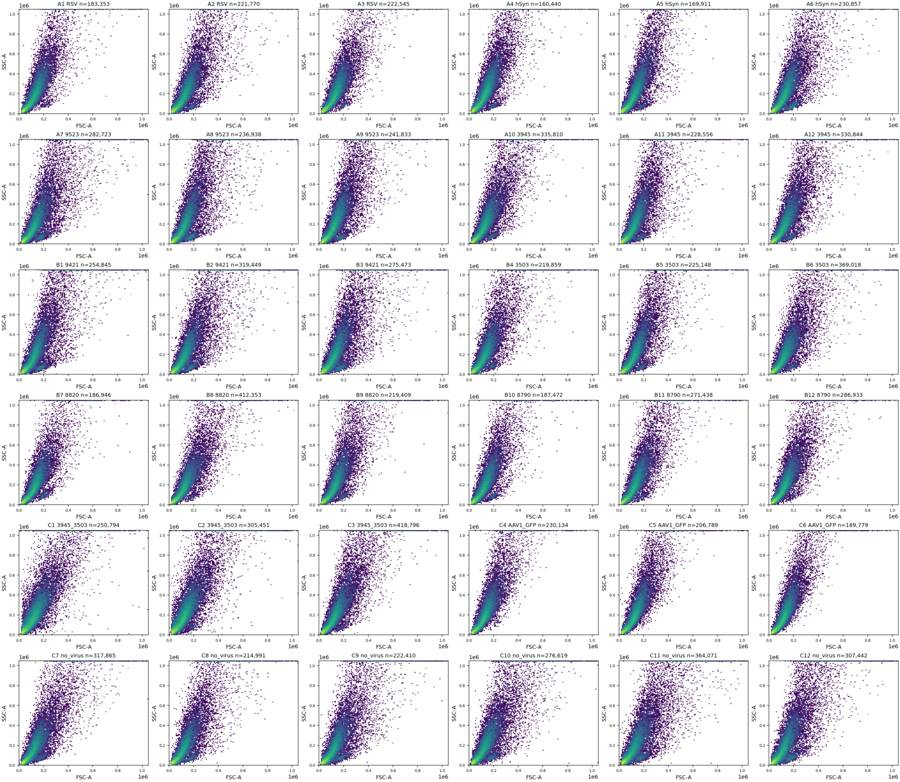
tool call · exec
text(await tools.exec_command({cmd:"ls -lh /task/outputs/plots","max_output_tokens":1000}));
text(await tools.write_stdin({session_id:78413,chars:"","yield_time_ms":1000,"max_output_tokens":5000}));
tool output
Script completed
Wall time 0.0 seconds
Output:
{"chunk_id":"b255e3","wall_time_seconds":0.00000308,"exit_code":0,"original_token_count":85,"output":"total 3.2M\n-rw-r--r-- 1 root root 652K Nov 10 17:19 initial_fluorescence_all.png\n-rw-r--r-- 1 root root 791K Nov 10 17:19 initial_rates_all.png\n-rw-r--r-- 1 root root 608K Nov 10 17:19 initial_scatter_all.png\n-rw-r--r-- 1 root root 529K Nov 10 17:19 initial_singlets_all.png\n-rw-r--r-- 1 root root 628K Nov 10 17:19 initial_time_all.png\n"}
{"chunk_id":"254869","wall_time_seconds":9.6e-7,"exit_code":0,"original_token_count":1351,"output":"well n duration max_time_gap rate_cv rate_last_first FSC-A_saturated_pct SSC-A_saturated_pct BL1-A_saturated_pct RL3-A_saturated_pct\n A1 183353 40.879 0.012 0.059229 0.896024 0.147802 1.823259 0.000000 0.060539\n A2 221770 40.877 0.038 0.088200 0.847409 0.254768 2.530099 0.000000 0.135275\n A3 222545 40.950 0.023 0.055366 0.913016 0.070098 1.210092 0.000000 0.061111\n A4 160440 41.065 0.015 0.115136 0.824403 0.209424 2.344179 0.000000 0.112815\n A5 169911 40.849 0.069 0.066771 0.923079 0.099464 2.247059 0.000000 0.013536\n A6 230857 40.886 0.026 0.097987 0.841892 0.107426 1.787687 0.000000 0.047215\n A7 282723 40.637 0.069 0.112201 0.831469 0.334249 3.192878 0.000000 0.105757\n A8 236938 40.931 0.085 0.085401 0.849366 0.235927 3.635550 0.000000 0.040517\n A9 241833 40.923 0.047 0.100222 0.822172 0.191868 2.815993 0.000000 0.063680\n A10 335810 40.625 0.027 0.093793 0.826813 0.111075 2.245913 0.000000 0.036032\n A11 228556 40.940 0.087 0.060914 0.907461 0.160573 2.506607 0.000000 0.028439\n A12 330844 40.885 0.028 0.106029 0.825013 0.118787 2.350957 0.000000 0.030830\n B1 254845 40.968 0.092 0.138140 0.814201 0.227982 3.066962 0.000000 0.060036\n B2 319449 40.853 0.135 0.153881 0.941236 0.339021 3.146981 0.000000 0.008452\n B3 275473 40.862 0.078 0.117821 0.845691 0.248663 3.056924 0.000000 0.009801\n B4 219859 40.918 0.024 0.058244 0.907981 0.279725 2.347868 0.000000 0.165106\n B5 225148 40.981 0.043 0.101197 0.860800 0.156342 2.558761 0.000000 0.025761\n B6 369018 40.855 0.034 0.063719 0.905696 0.155006 2.151115 0.000000 0.015446\n B7 186946 40.986 0.017 0.062251 0.884142 0.106983 1.326051 0.000000 0.031560\n B8 412353 40.640 0.012 0.142435 0.810215 0.097004 1.914864 0.000000 0.005335\n B9 219409 40.948 0.015 0.160695 0.753709 0.120323 2.023162 0.000000 0.016863\n B10 187472 40.931 0.177 0.071071 0.911906 0.079479 1.652513 0.000000 0.042673\n B11 271438 40.926 0.029 0.170467 0.735706 0.064840 1.826200 0.000000 0.005526\n B12 286933 40.809 0.014 0.071551 0.868115 0.052626 1.610480 0.000000 0.003137\n C1 250794 40.579 1.285 0.803682 11.046755 0.328955 2.782762 0.000000 0.025120\n C2 305451 40.910 0.411 0.523009 3.334639 0.309051 2.942534 0.000000 0.048780\n C3 418796 40.730 0.044 0.062117 0.966946 0.266956 3.243584 0.000000 0.013133\n C4 230134 40.960 0.010 0.079929 0.998520 0.077781 1.787220 0.013036 0.004780\n C5 206789 40.900 0.040 0.172274 0.824101 0.059965 1.807156 0.024179 0.005803\n C6 189779 41.003 0.025 0.185828 0.727339 0.040574 1.657718 0.013700 0.009485\n C7 317865 40.911 0.339 0.112522 0.899266 0.487943 2.656474 0.000000 0.061976\n C8 214991 40.798 0.324 0.254358 0.701331 0.459554 2.859655 0.000000 0.271639\n C9 222410 40.858 0.337 0.104477 0.897603 0.673531 3.259746 0.000000 0.132638\n C10 276619 40.729 0.133 0.097584 0.898245 0.598296 3.260080 0.000000 0.000000\n C11 364071 40.896 0.138 0.133055 0.908248 0.785561 4.331298 0.000000 0.087071\n C12 307442 40.864 0.055 0.079678 0.829061 0.422193 3.426012
… [37 more characters not shown]tool call · exec
for(const path of ["/task/outputs/plots/initial_singlets_all.png","/task/outputs/plots/initial_fluorescence_all.png","/task/outputs/plots/initial_rates_all.png"]) image((await tools.view_image({path})).image_url);
tool output
Script completed Wall time 0.1 seconds Output:
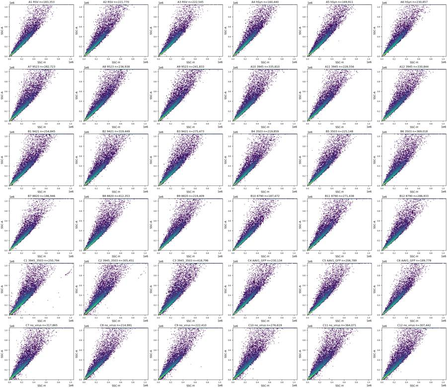
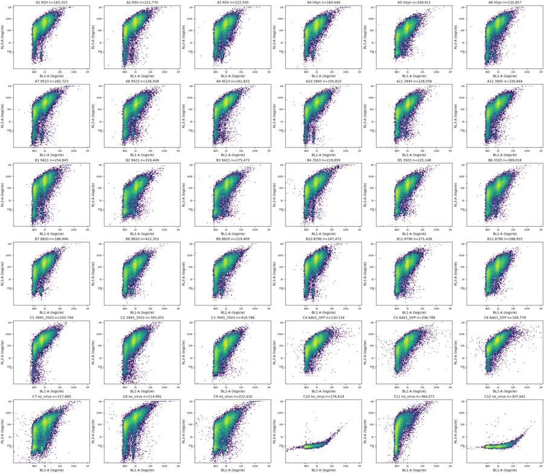
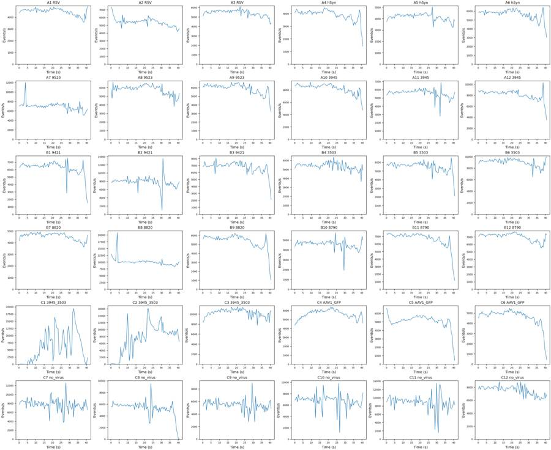
tool call · exec
text(await tools.exec_command({cmd:"cat > /task/outputs/gate_plate.py <<'PY'\n\"\"\"Reproduce the single, uncompensated gate set and its counts with FlowKit 1.2.3.\"\"\"\nfrom pathlib import Path\nimport json\nimport numpy as np, pandas as pd\nimport flowkit as fk\nOUT=Path(__file__).resolve().parent\nRAW=Path('/task/inputs/raw')\nNAMES=['Cells','Single_Cells','Live','Caspase_pos','Late_apoptosis']\nPARENTS=['All_events','Cells','Single_Cells','Live','Single_Cells']\n\ndef make_strategy():\n cfg=json.loads((OUT/'gate_parameters.json').read_text())\n gs=fk.GatingStrategy()\n fluor=fk.transforms.LogicleTransform(**cfg['fluorescence_logicle'])\n gs.add_transform('Fluorescence_Logicle',fluor)\n def dim(name,lo=None,hi=None,fluorescence=False):\n return fk.Dimension(name,compensation_ref='uncompensated',transformation_ref='Fluorescence_Logicle' if fluorescence else None,range_min=None if lo is None else float(fluor.apply(np.array([lo]))[0]) if fluorescence else lo,range_max=None if hi is None else float(fluor.apply(np.array([hi]))[0]) if fluorescence else hi)\n gs.add_gate(fk.gates.PolygonGate('Cells',[dim('FSC-A'),dim('SSC-A')],cfg['cells_vertices_raw']),('root',))\n gs.add_gate(fk.gates.PolygonGate('Single_Cells',[dim('SSC-H'),dim('SSC-A')],cfg['singlet_vertices_raw']),('root','Cells'))\n gs.add_gate(fk.gates.RectangleGate('Live',[dim('BL1-A',fluorescence=True),dim('RL3-A',hi=cfg['live_rl3_max_raw'],fluorescence=True)]),('root','Cells','Single_Cells'))\n gs.add_gate(fk.gates.RectangleGate('Caspase_pos',[dim('BL1-A',lo=cfg['caspase_bl1_min_raw'],fluorescence=True),dim('RL3-A',hi=cfg['live_rl3_max_raw'],fluorescence=True)]),('root','Cells','Single_Cells','Live'))\n vertices=np.array([[cfg['caspase_bl1_min_raw'],cfg['late_rl3_min_raw']],[cfg['fluorescence_polygon_upper_raw'],cfg['late_rl3_min_raw']],[cfg['fluorescence_polygon_upper_raw'],cfg['fluorescence_polygon_upper_raw']],[cfg['caspase_bl1_min_raw'],cfg['fluorescence_polygon_upper_raw']]],dtype=float)\n gs.add_gate(fk.gates.PolygonGate('Late_apoptosis',[dim('BL1-A',fluorescence=True),dim('RL3-A',fluorescence=True)],fluor.apply(vertices).tolist()),('root','Cells','Single_Cells'))\n return gs\n\ndef export_strategy():\n gs=make_strategy()\n with open(OUT/'gates.xml','wb') as f: fk.export_gatingml(gs,f)\n loaded=fk.parse_gating_xml(str(OUT/'gates.xml'))\n assert loaded.get_gate_ids()==gs.get_gate_ids()\n return loaded\n\nif __name__=='__main__':\n gs=export_strategy(); records=[]\n layout=pd.read_csv('/task/inputs/plate_layout.csv')\n for row in layout.itertuples():\n s=fk.Sample(str(RAW/row.file)); results=gs.gate_sample(s)\n counts={'All_events':s.event_count}\n for name,parent in zip(NAMES,PARENTS):\n count=int(results.get_gate_count(name)); counts[name]=count\n assert count<=counts[parent]\n records.append(dict(file=row.file,well=row.well,population=name,count=count,parent_population=parent,pct_of_parent=100.0*count/counts[parent] if counts[parent] else 0.0))\n print(row.well,counts,flush=True)\n pd.DataFrame(records).to_csv(OUT/'counts.csv',index=False)\n print('Saved and reloaded gates.xml; wrote',len(records),'count rows.')\nPY\ncat > /task/outputs/gate_parameters.json <<'JSON'\n{\n \"fluorescence_logicle\": {\"param_t\": 1048576, \"param_w\": 0.5, \"param_m\": 4.5, \"param_a\": 0},\n \"cells_vertices_raw\": [[45000,15000],[150000,15000],[700000,200000],[1040000,600000],[1040000,1040000],[150000,1040000],[45000,150000]],\n \"singlet_vertices_raw\": [[10000,8000],[1040000,832000],[1040000,1040000],[612000,1040000],[10000,17000]],\n \"live_rl3_max_raw\": 1000,\n \"late_rl3_min_raw\": 3000,\n \"caspase_bl1_min_raw\": 1000,\n \"fluorescence_polygon_upper_raw\": 2000000\n}\nJSON\npython /task/outputs/gate_plate.py","yield_time_ms":1000,"max_output_tokens":2000}));
tool output
Script completed
Wall time 1.2 seconds
Output:
{"chunk_id":"65d088","wall_time_seconds":1.00118263,"session_id":56605,"original_token_count":64,"output":"A1 {'All_events': 183353, 'Cells': 140067, 'Single_Cells': 130804, 'Live': 4050, 'Caspase_pos': 114, 'Late_apoptosis': 47134}\nA2 {'All_events': 221770, 'Cells': 168401, 'Single_Cells': 153501, 'Live': 10153, 'Caspase_pos': 663, 'Late_apoptosis': 54917}\n"}tool call · exec
text(await tools.exec_command({cmd:"cat > /task/outputs/inspect_controls.py <<'PY'\nfrom pathlib import Path\nimport numpy as np,pandas as pd\nimport matplotlib\nmatplotlib.use('Agg')\nimport matplotlib.pyplot as plt\nfrom matplotlib.colors import LogNorm\nimport flowkit as fk\nfrom gate_plate import OUT,RAW,make_strategy\nfrom scipy.ndimage import gaussian_filter1d\nG=make_strategy(); T=G.transformations['Fluorescence_Logicle']\nlayout=pd.read_csv('/task/inputs/plate_layout.csv'); rng=np.random.default_rng(12)\nctrl=['C10','C11','C12','C7','C8','C9','C4','C5','C6']\nfig,axes=plt.subplots(len(ctrl),3,figsize=(17,32),constrained_layout=True)\nticks=np.array([-1000,0,1000,10000,100000,1000000]); ticklabs=['−1k','0','1k','10k','100k','1M']\nrows=[]\nfor well,axs in zip(ctrl,axes):\n row=layout.set_index('well').loc[well];s=fk.Sample(str(RAW/row.file));e=s.get_events(source='raw');res=G.gate_sample(s);ss=res.get_gate_membership('Single_Cells');v=e[ss]\n axs[0].hist2d(T.apply(v[:,3]),T.apply(v[:,4]),bins=150,range=[[-.1,1.02],[-.1,1.02]],norm=LogNorm(),cmap='viridis')\n axs[0].axvline(T.apply(np.array([1000]))[0],color='red',ls='--',lw=.7)\n for threshold in [1000,3000]: axs[0].axhline(T.apply(np.array([threshold]))[0],color='red',ls='--',lw=.7)\n axs[0].set(xticks=T.apply(ticks),xticklabels=ticklabs,yticks=T.apply(ticks),yticklabels=ticklabs,xlabel='BL1-A (logicle)',ylabel='RL3-A (logicle)',title=f'{well} {row.control_type}: {len(v):,} singlets')\n for ax,col,ch in zip(axs[1:],[3,4],['BL1-A','RL3-A']):\n h,b=np.histogram(T.apply(v[:,col]),bins=250,range=[-.1,1.02]);x=(b[:-1]+b[1:])/2\n ax.plot(x,h/len(v),label='Single_Cells'); ax.set(xticks=T.apply(ticks),xticklabels=ticklabs,xlim=(-.1,1.02),xlabel=ch+' (logicle)',ylabel='Fraction per bin',title=f'{well} {ch}')\n if col==3:\n live=v[v[:,4]<1000]; h,b=np.histogram(T.apply(live[:,col]),bins=b)\n if len(live):ax.plot(x,h/len(live),label='RL3-A <1000',alpha=.6)\n ax.axvline(T.apply(np.array([1000]))[0],color='red',ls='--',lw=.7)\n else:\n for threshold in [1000,3000]:ax.axvline(T.apply(np.array([threshold]))[0],color='red',ls='--',lw=.7)\n ax.legend(fontsize=8)\n rec=dict(well=well,n=len(v),live=(v[:,4]<1000).sum())\n for i,ch in [(3,'BL1'),(4,'RL3')]:\n for q,lab in zip([.001,.01,.1,.25,.5,.75,.9,.95,.99,.995,.999],['p001','p01','p10','p25','p50','p75','p90','p95','p99','p995','p999']):rec[f'{ch}_{lab}']=np.quantile(v[:,i],q)\n rows.append(rec)\nfig.savefig(OUT/'plots'/'controls_initial.png',dpi=120);plt.close(fig)\npd.DataFrame(rows).to_csv(OUT/'control_quantiles.csv',index=False)\n\n# Low-scatter structure, before gating, in representative and control wells.\nwells=['A1','A3','A9','B7','B9','C3','C7','C10','C11','C12','C1','C2']\nfig,axes=plt.subplots(4,6,figsize=(24,17),constrained_layout=True)\nfor k,well in enumerate(wells):\n row=layout.set_index('well').loc[well];s=fk.Sample(str(RAW/row.file));e=s.get_events(source='raw');axs=axes.flat[2*k:2*k+2] if False else [axes.flat[2*k],axes.flat[2*k+1]]\n ax=axs[0]; ax.hist2d(e[:,1],e[:,2],bins=170,range=[[0,500000],[0,700000]],norm=LogNorm(),cmap='viridis')\n gate=G.get_gate('Cells');v=np.array(gate.vertices);v=np.vstack([v,v[0]])\n ax.plot(v[:,0],v[:,1],c='red',lw=1);ax.set(xlim=(0,500000),ylim=(0,700000),title=well+' Cells linear',xlabel='FSC-A',ylabel='SSC-A')\n ax=axs[1];ax.hist2d(T.apply(e[:,1]),T.apply(e[:,2]),bins=160,range=[[.45,1.02],[.35,1.02]],norm=LogNorm(),cmap='viridis')\n ax.plot(T.apply(v[:,0]),T.apply(v[:,1]),c='red',lw=1)\n tick=np.array([10000,30000,50000,100000,300000,1000000]);ax.set(xticks=T.apply(tick),xticklabels=['10k','30k','50k','100k','300k','1M'],yticks=T.apply(tick),yticklabels=['10k','30k','50k','100k','300k','1M'],title=well+' Cells logicle view',xlabel='FSC-A',ylabel='SSC-A',xlim=(.45,1.02),ylim=(.35,1.02));ax.tick_params(labelsize=7)\nfig.savefig(OUT/'plots'/'scatter_detail.png',dpi=130);plt.close(fig)\nprint(pd.DataFrame(rows).to_string(index=False))\nPY\npython /task/outputs/inspect_controls.py","yield_time_ms":1000,"max_output_tokens":2000}));
text(await tools.write_stdin({session_id:56605,chars:"","yield_time_ms":1000,"max_output_tokens":5000}));
tool output
Script completed
Wall time 1.2 seconds
Output:
{"chunk_id":"43db27","wall_time_seconds":1.00136519,"session_id":12156,"original_token_count":0,"output":""}
{"chunk_id":"b93cbb","wall_time_seconds":0.00000122,"exit_code":0,"original_token_count":1098,"output":"A3 {'All_events': 222545, 'Cells': 174846, 'Single_Cells': 163067, 'Live': 12589, 'Caspase_pos': 872, 'Late_apoptosis': 57622}\nA4 {'All_events': 160440, 'Cells': 126176, 'Single_Cells': 117718, 'Live': 6780, 'Caspase_pos': 283, 'Late_apoptosis': 44199}\nA5 {'All_events': 169911, 'Cells': 130804, 'Single_Cells': 122708, 'Live': 11559, 'Caspase_pos': 873, 'Late_apoptosis': 41738}\nA6 {'All_events': 230857, 'Cells': 179996, 'Single_Cells': 166511, 'Live': 15800, 'Caspase_pos': 907, 'Late_apoptosis': 61655}\nA7 {'All_events': 282723, 'Cells': 213102, 'Single_Cells': 191061, 'Live': 17539, 'Caspase_pos': 1042, 'Late_apoptosis': 73537}\nA8 {'All_events': 236938, 'Cells': 181127, 'Single_Cells': 165153, 'Live': 22893, 'Caspase_pos': 2157, 'Late_apoptosis': 67181}\nA9 {'All_events': 241833, 'Cells': 188256, 'Single_Cells': 172658, 'Live': 13115, 'Caspase_pos': 1053, 'Late_apoptosis': 66662}\nA10 {'All_events': 335810, 'Cells': 256346, 'Single_Cells': 232191, 'Live': 13455, 'Caspase_pos': 473, 'Late_apoptosis': 91678}\nA11 {'All_events': 228556, 'Cells': 170042, 'Single_Cells': 157624, 'Live': 15342, 'Caspase_pos': 1462, 'Late_apoptosis': 66183}\nA12 {'All_events': 330844, 'Cells': 247628, 'Single_Cells': 224945, 'Live': 17480, 'Caspase_pos': 1381, 'Late_apoptosis': 89574}\nB1 {'All_events': 254845, 'Cells': 189759, 'Single_Cells': 172743, 'Live': 19775, 'Caspase_pos': 1566, 'Late_apoptosis': 62814}\nB2 {'All_events': 319449, 'Cells': 236177, 'Single_Cells': 210972, 'Live': 38465, 'Caspase_pos': 4961, 'Late_apoptosis': 85007}\nB3 {'All_events': 275473, 'Cells': 208623, 'Single_Cells': 188358, 'Live': 28156, 'Caspase_pos': 3212, 'Late_apoptosis': 79880}\nB4 {'All_events': 219859, 'Cells': 163840, 'Single_Cells': 151334, 'Live': 9917, 'Caspase_pos': 514, 'Late_apoptosis': 49312}\nB5 {'All_events': 225148, 'Cells': 167485, 'Single_Cells': 155308, 'Live': 14537, 'Caspase_pos': 1094, 'Late_apoptosis': 59127}\nB6 {'All_events': 369018, 'Cells': 275343, 'Single_Cells': 247594, 'Live': 27747, 'Caspase_pos': 3557, 'Late_apoptosis': 104430}\nB7 {'All_events': 186946, 'Cells': 142237, 'Single_Cells': 133430, 'Live': 9741, 'Caspase_pos': 456, 'Late_apoptosis': 48013}\nB8 {'All_events': 412353, 'Cells': 312470, 'Single_Cells': 280122, 'Live': 25613, 'Caspase_pos': 1787, 'Late_apoptosis': 100808}\nB9 {'All_events': 219409, 'Cells': 166111, 'Single_Cells': 153917, 'Live': 11061, 'Caspase_pos': 620, 'Late_apoptosis': 54400}\nB10 {'All_events': 187472, 'Cells': 141162, 'Single_Cells': 133013, 'Live': 8261, 'Caspase_pos': 424, 'Late_apoptosis': 43088}\nB11 {'All_events': 271438, 'Cells': 207830, 'Single_Cells': 191913, 'Live': 16398, 'Caspase_pos': 1482, 'Late_apoptosis': 75689}\nB12 {'All_events': 286933, 'Cells': 219544, 'Single_Cells': 202882, 'Live': 17825, 'Caspase_pos': 1523, 'Late_apoptosis': 74815}\nC1 {'All_events': 250794, 'Cells': 193814, 'Single_Cells': 169968, 'Live': 5306, 'Caspase_pos': 168, 'Late_apoptosis': 39280}\nC2 {'All_events': 305451, 'Cells': 238138, 'Single_Cells': 211313, 'Live': 13399, 'Caspase_pos': 1063, 'Late_apoptosis': 60246}\nC3 {'All_events': 418796, 'Cells': 316753, 'Single_Cells': 279099, 'Live': 32564, 'Caspase_pos': 2735, 'Late_apoptosis': 94467}\nC4 {'All_events': 230134, 'Cells': 178227, 'Single_Cells': 166258, 'Live': 5838, 'Caspase_pos': 270, 'Late_apoptosis': 55797}\nC5 {'All_events': 206789, 'Cells': 160151, 'Single_Cells': 149406, 'Live': 6727, 'Caspase_pos': 368, 'Late_apoptosis': 52355}\nC6 {'All_events': 189779, 'Cells': 146466, 'Single_Cells': 138122, 'Live': 3869, 'Caspase_pos': 265, 'Late_apoptosis': 51047}\nC7 {'All_events': 317865, 'Cells': 235415, 'Single_Cells': 205777, 'Live': 45460, 'Caspase_pos': 8739, 'Late_apoptosis': 71997}\nC8 {'All_events': 214991, 'Cells': 156368, 'Single_Cells': 141439, 'Live': 14104, 'Caspase_pos': 1516, 'Late_apoptosis': 51659}\nC9 {'All_events': 222410, 'Cells': 163072, 'Single_Cells': 145091, 'Live': 26341, 'Caspase_pos': 3645, 'Late_apoptosis': 56154}\nC10 {'All_events': 276619, 'Cells': 207848, 'Single_Cells': 183657, 'Live': 183598, 'Caspase_pos': 13767, 'Late_apoptosis': 4}\nC11 {'All_events': 364071, 'Cells': 264294, 'Single_Cells': 226431, 'Live': 45738, 'Caspase_pos': 287, 'Late_apoptosis': 14825}\nC12 {'All_events': 307442, 'Cells': 228792, 'Single_Cells': 202595, 'Live': 202502, 'Caspase_pos': 97514, 'Late_apoptosis': 23}\nSaved and reloaded gates.xml; wrote 180 count rows.\n"}14
agent
The first shared gate set is saved, reloads successfully, and produces all 180 count rows. I’m now refining the fluorescence boundaries from C10–C12. C4–C6 will be flagged as unsuitable for caspase interpretation because BL1-A contains both GFP and CellEvent signal.
tool call · exec
text(await tools.write_stdin({session_id:12156,chars:"","yield_time_ms":1000,"max_output_tokens":5000}));
text(await tools.exec_command({cmd:"ls -lh /task/outputs/plots/controls_initial.png /task/outputs/plots/scatter_detail.png","max_output_tokens":1000}));
tool output
Script completed
Wall time 3.1 seconds
Output:
{"chunk_id":"126b86","wall_time_seconds":3.0861048,"exit_code":0,"original_token_count":568,"output":"well n live BL1_p001 BL1_p01 BL1_p10 BL1_p25 BL1_p50 BL1_p75 BL1_p90 BL1_p95 BL1_p99 BL1_p995 BL1_p999 RL3_p001 RL3_p01 RL3_p10 RL3_p25 RL3_p50 RL3_p75 RL3_p90 RL3_p95 RL3_p99 RL3_p995 RL3_p999\n C10 183657 183598 -106.344 -31.0 38.0 96.0 209.0 386.0 815.0 1243.00 2132.00 2534.000 3479.688 -137.000 -95.00 -41.0 -10.0 26.0 65.0 106.0 134.00 200.00 232.000 332.344\n C11 226431 45738 -221.570 -39.0 28.0 78.0 173.0 346.0 762.0 1223.00 2165.00 2575.000 3444.140 -2705.570 -645.70 87.0 1635.0 6724.0 17327.0 33860.0 48735.50 87402.10 106746.550 152552.120\n C12 202595 202502 -64.000 4.0 146.0 406.0 967.0 1474.0 2440.0 3157.30 5130.00 6057.030 8564.060 -138.000 -96.00 -42.0 -11.0 25.0 64.0 103.0 131.00 200.00 233.000 350.406\n C7 205777 45460 -257.448 3.0 173.0 454.0 903.0 1466.0 2390.0 3129.00 5023.00 5879.000 7906.224 -3073.448 -521.24 96.0 1342.0 6685.0 18037.0 34742.4 49041.60 86927.48 105212.440 152434.776\n C8 141439 14104 -71.562 9.0 151.0 379.0 825.0 1302.0 2146.0 2811.10 4650.62 5519.620 7676.678 -2801.810 -852.62 1007.0 7512.0 24424.0 54993.5 98854.4 135448.10 230974.92 278712.880 398845.524\n C9 145091 26341 -352.820 -1.0 144.0 388.0 897.0 1428.0 2382.0 3115.00 5079.00 5969.550 8263.550 -2941.760 -534.00 163.0 2146.5 9521.0 24211.0 46044.0 64175.00 112491.50 137537.100 197224.990\n C4 166258 5838 -266.145 63.0 211.0 440.0 785.0 1237.0 2035.0 2759.00 5731.15 9417.155 32453.234 -295.000 108.00 2916.0 6977.0 15525.5 31607.0 56166.9 75594.75 128245.04 152799.010 204933.869\n C5 149406 6727 -675.975 68.0 224.0 472.0 819.0 1261.0 2023.0 2685.75 5366.95 8586.775 33969.675 -282.595 71.00 2451.0 6332.0 15255.0 32849.5 57306.0 76430.50 126348.55 148275.975 200200.725\n C6 138122 3869 -372.790 77.0 237.0 476.0 842.0 1290.0 2115.0 2844.95 6086.95 10628.900 35087.334 -250.879 165.21 4242.0 9513.0 20752.5 39990.0 66496.9 88153.60 143191.48 166887.845 224280.039\n"}
{"chunk_id":"1547ec","wall_time_seconds":0.00000296,"exit_code":0,"original_token_count":41,"output":"-rw-r--r-- 1 root root 983K Nov 10 17:20 /task/outputs/plots/controls_initial.png\n-rw-r--r-- 1 root root 1.2M Nov 10 17:20 /task/outputs/plots/scatter_detail.png\n"}tool call · exec
for(const path of ["/task/outputs/plots/controls_initial.png","/task/outputs/plots/scatter_detail.png"]) image((await tools.view_image({path,detail:"original"})).image_url);
tool output
Script completed Wall time 0.1 seconds Output:
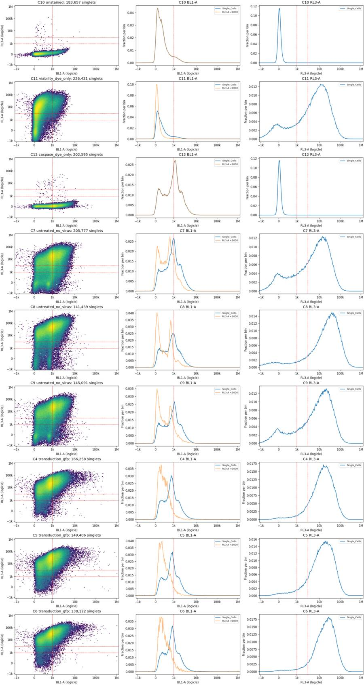
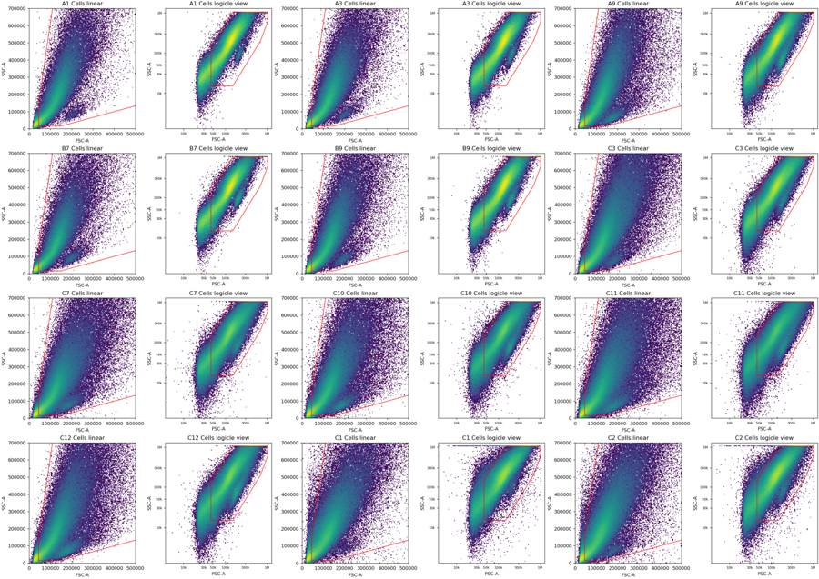
tool call · exec
text(await tools.exec_command({cmd:"cat > /task/outputs/refine_gates.py <<'PY'\nfrom pathlib import Path\nimport numpy as np,pandas as pd\nimport matplotlib\nmatplotlib.use('Agg')\nimport matplotlib.pyplot as plt\nfrom matplotlib.colors import LogNorm\nfrom scipy.ndimage import gaussian_filter1d\nfrom scipy.signal import find_peaks\nimport flowkit as fk\nfrom gate_plate import OUT,RAW,make_strategy\nG=make_strategy();T=G.transformations['Fluorescence_Logicle'];layout=pd.read_csv('/task/inputs/plate_layout.csv').set_index('well')\nfig,axes=plt.subplots(3,4,figsize=(22,15),constrained_layout=True)\nfor axs,well in zip(axes,['A3','C7','C10']):\n s=fk.Sample(str(RAW/layout.loc[well,'file']));e=s.get_events(source='raw');r=G.gate_sample(s);v=e[r.get_gate_membership('Cells')]\n ax=axs[0];ax.hist2d(v[:,6],v[:,2],bins=180,range=[[0,800000],[0,1050000]],norm=LogNorm());vertices=np.array(G.get_gate('Single_Cells').vertices);vertices=np.vstack([vertices,vertices[0]]);ax.plot(vertices[:,0],vertices[:,1],color='red');ax.set(xlim=(0,800000),ylim=(0,1050000),title=well+' singlets',xlabel='SSC-H',ylabel='SSC-A')\n rat=v[:,2]/np.maximum(v[:,6],1)\n ax=axs[1];ax.hist2d(v[:,6],rat,bins=180,range=[[0,700000],[.5,3]],norm=LogNorm());ax.axhline(1.7,c='red');ax.set(title=well+' ratio vs SSC-H',xlabel='SSC-H',ylabel='SSC-A/SSC-H')\n ax=axs[2];ax.hist(rat,bins=250,range=(.5,3),density=True);ax.axvline(1.7,c='red');ax.set(title=well+' ratio density',xlabel='SSC-A/SSC-H')\n ax=axs[3];ax.hist(e[:,1],bins=250,range=(0,300000),density=True);ax.axvline(45000,c='red');ax.set(title=well+' FSC-A density',xlabel='FSC-A')\nfig.savefig(OUT/'plots'/'singlet_detail.png',dpi=140);plt.close(fig)\n\nfig,axes=plt.subplots(2,2,figsize=(16,12),constrained_layout=True)\nthreshold_rows=[]\ncolors=['black','tab:blue','tab:orange','tab:green','tab:red']\nfor well,color in zip(['C10','C11','C12','C7','C9'],colors):\n s=fk.Sample(str(RAW/layout.loc[well,'file']));e=s.get_events(source='raw');r=G.gate_sample(s);v=e[r.get_gate_membership('Single_Cells')]\n for ax,col,group in [(axes[0,0],3,'all'),(axes[0,1],3,'live'),(axes[1,0],4,'all')]:\n ev=v if group=='all' else v[v[:,4]<1000]\n vals=T.apply(ev[:,col]);h,b=np.histogram(vals,bins=500,range=[-.2,1]);x=(b[1:]+b[:-1])/2\n ax.plot(x,gaussian_filter1d(h.astype(float),2)/len(ev),label=well,c=color)\n if col==3:\n peaks,_=find_peaks(gaussian_filter1d(h.astype(float),2),prominence=len(ev)*.0005)\n print(well,group,'BL1 peaks',T.inverse(x[peaks]))\n for bl in [300,400,500,600,700,800,1000,1500,2000,2500]:\n threshold_rows.append(dict(well=well,BL1_threshold=bl,ss_pos_pct=100*np.mean(v[:,3]>=bl),live_pos_pct=100*np.mean(v[v[:,4]<1000,3]>=bl)))\n for rl in [200,300,500,700,1000,1500,2000,3000]:\n print(well,'RL3 threshold',rl,'percent below',100*np.mean(v[:,4]<rl))\n ax=axes[1,1]\n h,b=np.histogram(v[:,3],bins=200,range=(-100,3000),density=True);x=(b[1:]+b[:-1])/2;ax.plot(x,gaussian_filter1d(h,2),label=well,c=color)\nfor ax in axes.flat:\n ax.legend();ax.set_ylabel('Normalized frequency')\nfor ax in [axes[0,0],axes[0,1],axes[1,0]]:\n ticks=np.array([-1000,-300,0,100,300,500,1000,3000,10000,100000]);ax.set_xticks(T.apply(ticks),[str(x) for x in ticks]);ax.set_xlim(T.apply(np.array([-1500,50000])));ax.tick_params(labelsize=8)\naxes[0,0].set_title('BL1-A: all singlets');axes[0,1].set_title('BL1-A: RL3-A <1000');axes[1,0].set_title('RL3-A: all singlets');axes[1,1].set_title('BL1-A: all singlets, linear scale');\nfig.savefig(OUT/'plots'/'control_overlays.png',dpi=160);plt.close(fig)\npd.DataFrame(threshold_rows).to_csv(OUT/'threshold_sensitivity.csv',index=False)\nprint(pd.DataFrame(threshold_rows).to_string(index=False))\nPY\npython /task/outputs/refine_gates.py","yield_time_ms":1000,"max_output_tokens":1000}));
tool output
Script completed
Wall time 1.2 seconds
Output:
{"chunk_id":"4e8ddc","wall_time_seconds":1.00123887,"session_id":92919,"original_token_count":0,"output":""}tool call · exec
image((await tools.view_image({path:"/task/outputs/plots/initial_time_all.png"})).image_url);
text(await tools.exec_command({cmd:"python - <<'PY'\nimport pandas as pd\ns=pd.read_csv('/task/outputs/initial_qc_metrics.csv')\nprint(s[['well']+[f'FSC_med_time_decile_{i}' for i in range(1,11)]].round().to_string(index=False))\nPY","max_output_tokens":3000}));
tool output
Script completed Wall time 0.3 seconds Output:
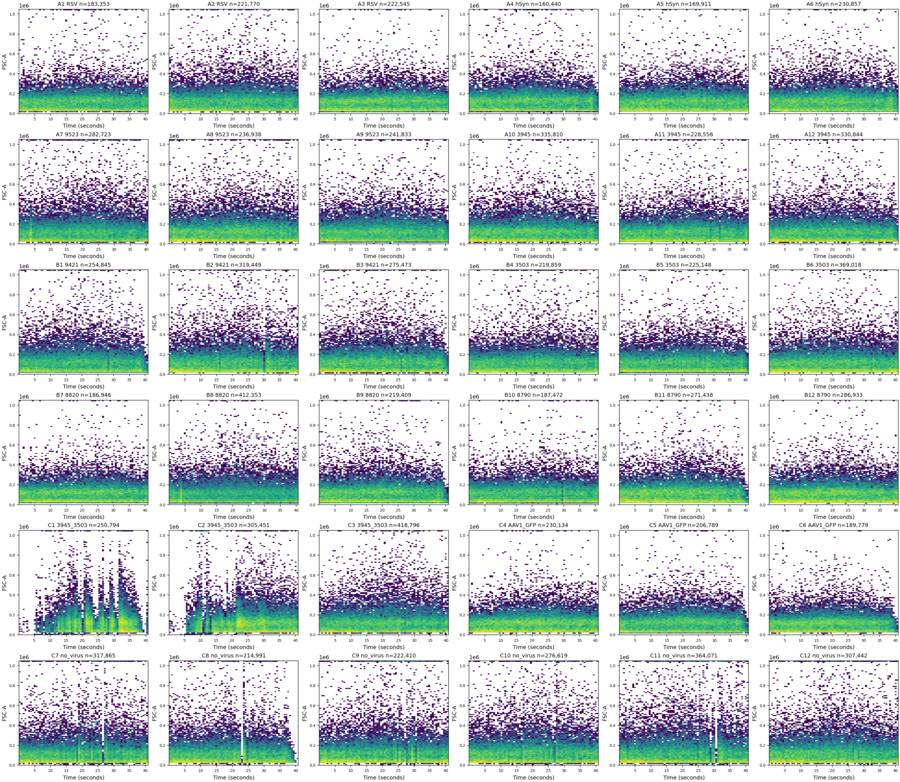
{"chunk_id":"4be9d3","wall_time_seconds":0.10815913,"exit_code":0,"original_token_count":2183,"output":"well FSC_med_time_decile_1 FSC_med_time_decile_2 FSC_med_time_decile_3 FSC_med_time_decile_4 FSC_med_time_decile_5 FSC_med_time_decile_6 FSC_med_time_decile_7 FSC_med_time_decile_8 FSC_med_time_decile_9 FSC_med_time_decile_10\n A1 94578.0 97032.0 98303.0 106066.0 111547.0 113206.0 113495.0 111532.0 107572.0 99412.0\n A2 97980.0 99541.0 100406.0 106430.0 111966.0 114532.0 114063.0 112779.0 109537.0 102524.0\n A3 97791.0 99037.0 102359.0 107449.0 112425.0 114671.0 115374.0 112616.0 108496.0 103272.0\n A4 107270.0 108464.0 110875.0 119458.0 123418.0 122208.0 122495.0 117364.0 111678.0 107082.0\n A5 96708.0 96966.0 100538.0 107406.0 111057.0 115178.0 115426.0 110064.0 106336.0 100460.0\n A6 101834.0 101834.0 106350.0 111793.0 117062.0 118071.0 116431.0 112162.0 107797.0 105022.0\n A7 97234.0 99224.0 101207.0 107120.0 113536.0 116566.0 117404.0 112097.0 109978.0 101990.0\n A8 102214.0 103592.0 107824.0 113276.0 120182.0 122764.0 120144.0 118726.0 117133.0 107941.0\n A9 102976.0 103470.0 106733.0 113062.0 117727.0 118946.0 117984.0 114170.0 111228.0 106060.0\n A10 98802.0 102484.0 104932.0 110126.0 115097.0 113476.0 112649.0 112017.0 105318.0 102990.0\n A11 91652.0 91016.0 96838.0 101690.0 108718.0 111255.0 109232.0 101584.0 102923.0 94379.0\n A12 93045.0 96153.0 101589.0 106828.0 110152.0 110727.0 107268.0 106422.0 97497.0 95366.0\n B1 95980.0 98862.0 104839.0 111533.0 118377.0 116012.0 112769.0 108566.0 102182.0 95631.0\n B2 91242.0 95833.0 100431.0 106805.0 111617.0 115892.0 112684.0 110554.0 104484.0 99306.0\n B3 96410.0 103806.0 106144.0 113126.0 118152.0 119446.0 118360.0 113434.0 106718.0 100053.0\n B4 91247.0 95512.0 96810.0 101418.0 108692.0 113936.0 111498.0 107626.0 103557.0 98477.0\n B5 93870.0 94796.0 98683.0 105350.0 111015.0 112941.0 110934.0 106772.0 99776.0 94857.0\n B6 91106.0 94863.0 97182.0 102668.0 108557.0 111775.0 107898.0 107304.0 102374.0 95759.0\n B7 99356.0 97809.0 100070.0 104420.0 108810.0 113134.0 112400.0 111440.0 107862.0 101546.0\n B8 94448.0 94447.0 98674.0 103530.0 109238.0 109713.0 110097.0 108806.0 104802.0 100362.0\n B9 99874.0 99369.0 102532.0 108489.0 115214.0 115629.0 114198.0 107673.0 97915.0 94453.0\n B10 96482.0 95250.0 95871.0 102236.0 107302.0 110460.0 108817.0 104984.0 100462.0 94073.0\n B11 98385.0 101228.0 103597.0 109314.0 114503.0 113822.0 111851.0 108950.0 103700.0 96750.0\n B12 95935.0 97539.0 100350.0 106637.0 111596.0 113234.0 109662.0 107539.0 10266
… [2,875 more characters not shown]tool call · exec
text(await tools.write_stdin({session_id:92919,chars:"","yield_time_ms":1000,"max_output_tokens":5000}));
image((await tools.view_image({path:"/task/outputs/plots/singlet_detail.png"})).image_url);
image((await tools.view_image({path:"/task/outputs/plots/control_overlays.png"})).image_url);
tool output
Script completed Wall time 0.1 seconds Output:
{"chunk_id":"f33e36","wall_time_seconds":0.00000291,"exit_code":0,"original_token_count":1230,"output":"C10 all BL1 peaks [84.95553433]\nC10 live BL1 peaks [84.95553433]\nC10 RL3 threshold 200 percent below 98.9883315092809\nC10 RL3 threshold 300 percent below 99.85135333801598\nC10 RL3 threshold 500 percent below 99.95317357900869\nC10 RL3 threshold 700 percent below 99.9586185116821\nC10 RL3 threshold 1000 percent below 99.96787489722689\nC10 RL3 threshold 1500 percent below 99.9705973635636\nC10 RL3 threshold 2000 percent below 99.97386432316765\nC10 RL3 threshold 3000 percent below 99.9771312827717\nC11 all BL1 peaks [76.28078646]\nC11 live BL1 peaks [50.37783527]\nC11 RL3 threshold 200 percent below 11.738233722414334\nC11 RL3 threshold 300 percent below 13.097588227760335\nC11 RL3 threshold 500 percent below 15.472263073519086\nC11 RL3 threshold 700 percent below 17.528076985925072\nC11 RL3 threshold 1000 percent below 20.199530982948446\nC11 RL3 threshold 1500 percent below 24.044852515777436\nC11 RL3 threshold 2000 percent below 27.475478180991118\nC11 RL3 threshold 3000 percent below 33.40885302807477\nC12 all BL1 peaks [ 119.92823787 1164.59128802]\nC12 live BL1 peaks [ 119.92823787 1164.59128802]\nC12 RL3 threshold 200 percent below 98.99602655544312\nC12 RL3 threshold 300 percent below 99.83119030578247\nC12 RL3 threshold 500 percent below 99.94224931513611\nC12 RL3 threshold 700 percent below 99.94669167551025\nC12 RL3 threshold 1000 percent below 99.95409560946716\nC12 RL3 threshold 1500 percent below 99.95804437424418\nC12 RL3 threshold 2000 percent below 99.96248673461832\nC12 RL3 threshold 3000 percent below 99.96643549939535\nC7 all BL1 peaks [977.28611017]\nC7 live BL1 peaks [ 76.28078646 682.81787582]\nC7 RL3 threshold 200 percent below 11.98433255417272\nC7 RL3 threshold 300 percent below 13.67159595095662\nC7 RL3 threshold 500 percent below 16.586887747415894\nC7 RL3 threshold 700 percent below 19.04537436156616\nC7 RL3 threshold 1000 percent below 22.091876157199298\nC7 RL3 threshold 1500 percent below 26.24005598293298\nC7 RL3 threshold 2000 percent below 29.641310739295452\nC7 RL3 threshold 3000 percent below 35.22405322266337\nC9 all BL1 peaks [ 119.92823787 1066.96926978]\nC9 live BL1 peaks [ 67.62799938 731.34957691]\nC9 RL3 threshold 200 percent below 10.477562357417069\nC9 RL3 threshold 300 percent below 11.789842236940954\nC9 RL3 threshold 500 percent below 13.971921070224894\nC9 RL3 threshold 700 percent below 15.78457657607984\nC9 RL3 threshold 1000 percent below 18.154813186207278\nC9 RL3 threshold 1500 percent below 21.51546270960983\nC9 RL3 threshold 2000 percent below 24.241338194650254\nC9 RL3 threshold 3000 percent below 28.98112219227933\nwell BL1_threshold ss_pos_pct live_pos_pct\n C10 300 34.472413 34.469330\n C10 400 23.928846 23.924008\n C10 500 18.113658 18.111853\n C10 600 14.496044 14.493622\n C10 700 12.069238 12.067125\n C10 800 10.253897 10.251746\n C10 1000 7.499850 7.498448\n C10 1500 3.182019 3.179773\n C10 2000 1.276292 1.274524\n C10 2500 0.524892 0.523426\n C11 300 29.672615 5.240719\n C11 400 20.982551 3.161485\n C11 500 16.171372 2.271634\n C11 600 13.084339 1.720670\n C11 700 11.008652 1.327124\n C11 800 9.439079 1.038524\n C11 1000 7.063962 0.627487\n C11 1500 3.161228 0.166164\n C11 2000 1.318282 0.034982\n C11 2500 0.577659 0.006559\n C12 300 80.338113 80.336984\n C12 400 75.324169 75.322713\n C12 500 70.943508 70.943991\n C12 600 66.940941 66.941067\n C12 700 62.945779 62.948514\n C12 800 58.522668 58.526829\n C12 1000 48.148276 48.154586\n C12 1500 24.279474 24.279760\n C12 2000 15.459908 15.458613\n C12 2500 9.425702 9.423611\n C7 300 83.015109 66.196656\n C7 400 77.761363 59.045315\n C7 500 72.782187 52.446106\n C7 600 67.891455 45.450946\n C7 700 62.357795 36.660801\n C7 800 56.471812 29.344479\n C7 1000 43.520899 19.223493\n C7 1500 24.269962 7.919050\n C7 2000 15.041526 3.781346\n C7 2500 8.931027 1.781786\n C9 300 79.909850 54.109563\n C9 400 74.356094 47.040735\n C9 500 69.524643 41.365172\n C9 600 65.055034 36.475457\n C9 700 60.444824 29.983676\n C9 800 55.346645 22.717437\n C9 1000 44.146088 13.837743\n C9 1500 23.361201 6.157701\n C9 2000 14.752121 3.295243\n C9 2500 8.866160 1.989294\n"}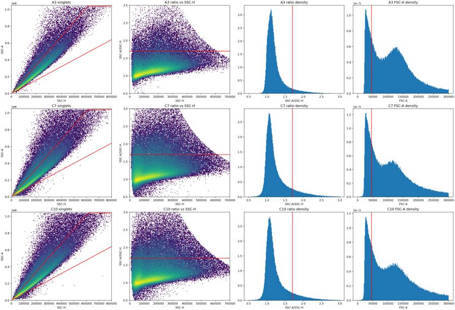
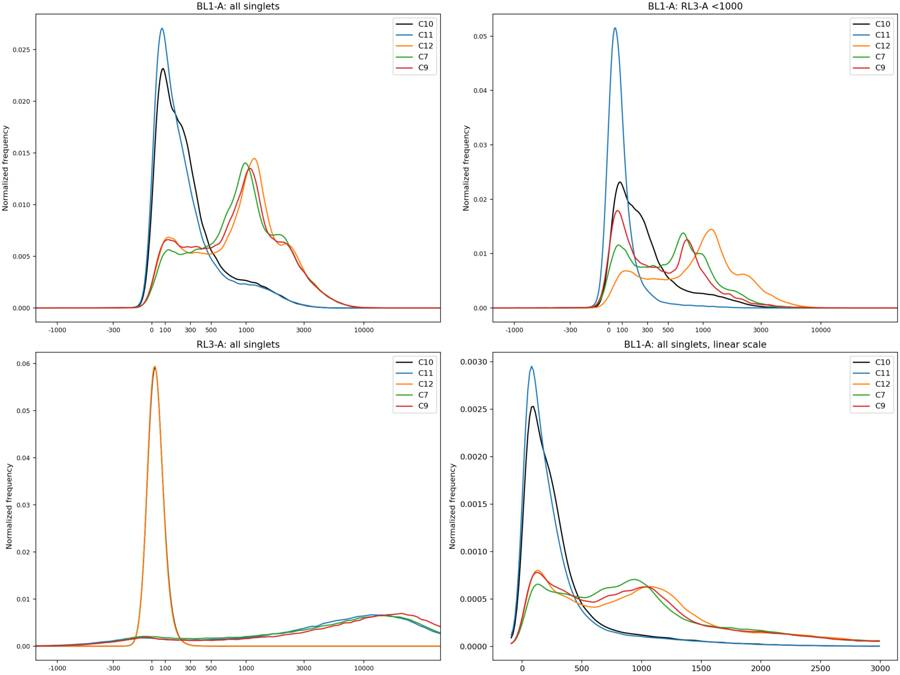
19
agent
The controls support separate live and Zombie-bright regions, with an intermediate region left unassigned. CellEvent-positive and background signals overlap, so the notes will quantify background above the chosen cutoff. I’ll also tighten the debris boundary around the main cell cluster and check whether the flow-rate drops near acquisition end coincide with changes in scatter or fluorescence.
tool call · exec
text(await tools.exec_command({cmd:"cat > /task/outputs/time_qc.py <<'PY'\nimport numpy as np,pandas as pd\nfrom pathlib import Path\nimport matplotlib\nmatplotlib.use('Agg')\nimport matplotlib.pyplot as plt\nfrom matplotlib.colors import LogNorm\nimport flowkit as fk\nfrom gate_plate import OUT,RAW,make_strategy\nG=make_strategy();layout=pd.read_csv('/task/inputs/plate_layout.csv'); bins=np.arange(0,41.0001,.5)\nsegments=[]; metrics=[]\nfor row in layout.itertuples():\n s=fk.Sample(str(RAW/row.file));e=s.get_events(source='raw');t=e[:,0];r=G.gate_sample(s);masks={p:r.get_gate_membership(p) for p in ['Cells','Single_Cells','Live','Caspase_pos','Late_apoptosis']}\n for i in range(len(bins)-1):\n m=(t>=bins[i])&(t<bins[i+1]);v=e[m];n=len(v)\n d=dict(well=row.well,start=bins[i],end=bins[i+1],n=n,rate=n/.5)\n for ch,col in [('FSC',1),('SSC',2),('BL1',3),('RL3',4)]:d[ch+'_median']=np.median(v[:,col]) if n else np.nan\n for p,pm in masks.items():d[p]=int((m&pm).sum())\n d['Live_pct_ss']=100*d['Live']/d['Single_Cells'] if d['Single_Cells'] else np.nan\n d['Caspase_pct_live']=100*d['Caspase_pos']/d['Live'] if d['Live'] else np.nan\n d['Late_pct_ss']=100*d['Late_apoptosis']/d['Single_Cells'] if d['Single_Cells'] else np.nan\n segments.append(d)\n rec=dict(well=row.well,n=len(e),duration=np.ptp(t),max_time_gap=np.diff(t).max(),n_gaps_gt_0p1s=int((np.diff(t)>.1).sum()),time_in_gaps_gt_0p1s=np.diff(t)[np.diff(t)>.1].sum())\n base=(t>=5)&(t<35);tail=(t>=39)&(t<40.5);first=(t<5)\n rec['base_rate']=base.sum()/30;rec['tail_rate']=tail.sum()/1.5;rec['tail_rate_ratio']=rec['tail_rate']/rec['base_rate'];rec['first_5s_rate']=first.sum()/5\n rec['FSC_tail_base_ratio']=np.median(e[tail,1])/np.median(e[base,1]) if tail.any() else np.nan\n for pop,mask in masks.items():\n rec[pop+'_base_pct_all']=100*(base&mask).sum()/base.sum()\n rec[pop+'_tail_pct_all']=100*(tail&mask).sum()/max(1,tail.sum())\n d=pd.DataFrame([a for a in segments if a['well']==row.well]);baseline=d[(d.start>=5)&(d.end<=35)].rate.median()\n rec['median_halfsecond_rate']=baseline\n rec['full_halfsecond_bins_below_10pct_baseline']=int(((d.rate<.1*baseline)&(d.end<=t.max())).sum())\n rec['full_halfsecond_bins_below_50pct_baseline']=int(((d.rate<.5*baseline)&(d.end<=t.max())).sum())\n for start in [36,37,38,39,40]:\n m=(t>=start)&(t<min(start+1,t.max()));duration=min(start+1,t.max())-start\n rec[f'rate_{start}s']=m.sum()/max(duration,.0001)\n rec[f'fsc_{start}s']=np.median(e[m,1]) if m.any() else np.nan\n rec[f'rl3_{start}s']=np.median(e[m,4]) if m.any() else np.nan\n metrics.append(rec)\n print(row.well,round(rec['base_rate']),round(rec['tail_rate_ratio'],3),round(rec['FSC_tail_base_ratio'],3),rec['n_gaps_gt_0p1s'],flush=True)\npd.DataFrame(segments).to_csv(OUT/'time_segments.csv',index=False);pd.DataFrame(metrics).to_csv(OUT/'time_qc_metrics.csv',index=False)\n# Diagnostic time plots are based on all events; no temporal gate is added.\nfig,axes=plt.subplots(6,6,figsize=(25,21),constrained_layout=True)\nseg=pd.DataFrame(segments)\nfor ax,row in zip(axes.flat,layout.itertuples()):\n d=seg[seg.well==row.well];x=(d.start+d.end)/2\n ax.plot(x,d.rate/d[(d.start>=5)&(d.end<=35)].rate.median(),label='rate / baseline',color='tab:blue')\n ax.plot(x,d.FSC_median/d[(d.start>=5)&(d.end<=35)].FSC_median.median(),label='FSC median / baseline',color='tab:orange')\n ax.set(title=row.well,xlabel='Time (s)',ylim=(0,2.5));ax.axhline(.1,color='gray',lw=.6,ls=':')\n if row.well=='A1':ax.legend(fontsize=7)\nfig.savefig(OUT/'plots'/'time_stability.png',dpi=140)\nprint(pd.DataFrame(metrics).round(3).to_string(index=False))\nPY\npython /task/outputs/time_qc.py","yield_time_ms":1000,"max_output_tokens":1000}));
text(await tools.exec_command({cmd:"python - <<'PY'\nimport numpy as np,flowkit as fk,pandas as pd\nfrom scipy.ndimage import gaussian_filter1d\nfrom scipy.signal import find_peaks\nfrom pathlib import Path\nT=fk.transforms.LogicleTransform(1048576,.5,4.5,0)\na=np.load('/task/outputs/plot_subsamples.npz'); e=np.vstack([a[k] for k in a.files if k not in ['C1','C2','C4','C5','C6']]); h,b=np.histogram(e[:,1],bins=np.arange(0,300001,1000)); sm=gaussian_filter1d(h.astype(float),4);x=(b[1:]+b[:-1])/2;mask=(x>50000)&(x<100000);print('pooled FSC valley',x[mask][np.argmin(sm[mask])]);print('pooled peaks',x[find_peaks(sm,prominence=100)[0]])\nPY","yield_time_ms":1000,"max_output_tokens":1000}));
tool output
Script completed
Wall time 2.3 seconds
Output:
{"chunk_id":"969e94","wall_time_seconds":1.00108712,"session_id":1846,"original_token_count":0,"output":""}
{"chunk_id":"fbf749","wall_time_seconds":1.00129978,"session_id":6736,"original_token_count":15,"output":"pooled FSC valley 84500.0\npooled peaks [ 29500. 120500.]\n"}tool call · exec
text(await tools.clock__curr_time({}));
text(await tools.exec_command({cmd:"python - <<'PY'\nimport sys\nsys.path.insert(0,'/task/outputs')\nimport flowkit as fk,numpy as np\nfrom scipy.ndimage import gaussian_filter1d\nfrom scipy.signal import find_peaks\nfrom gate_plate import RAW,make_strategy\nG=make_strategy();T=G.transformations['Fluorescence_Logicle']\nfor w,col in [('C11',4),('C12',3)]:\n s=fk.Sample(str(RAW/f'Caspase_KO_RNAswap-rep2_caspase_Group_{w}.fcs'));e=s.get_events(source='raw');m=G.gate_sample(s).get_gate_membership('Single_Cells');e=e[m];h,b=np.histogram(T.apply(e[:,col]),bins=500,range=(-.5,1.1));x=(b[:-1]+b[1:])/2;sm=gaussian_filter1d(h.astype(float),3);peaks=find_peaks(sm,prominence=30)[0];mins=find_peaks(-sm,prominence=30)[0];print(w,'peaks',T.inverse(x[peaks]),'valleys',T.inverse(x[mins]))\nPY","max_output_tokens":1000}));
text(await tools.write_stdin({session_id:1846,chars:"","yield_time_ms":1000,"max_output_tokens":1000}));
tool output
Script completed
Wall time 6.9 seconds
Output:
{"current_time":"2026-11-10 17:22:49 UTC"}
{"chunk_id":"ba4192","wall_time_seconds":1.74458515,"exit_code":0,"original_token_count":32,"output":"C11 peaks [ -74.1958011 12599.23986539] valleys [295.64268461]\nC12 peaks [ 133.18085924 1151.92473818] valleys [472.51061817]\n"}
{"chunk_id":"38a083","wall_time_seconds":5.000515099,"session_id":1846,"original_token_count":199,"output":"A1 4547 0.94 0.955 0\nA2 5467 0.806 0.924 0\nA3 5533 0.84 0.923 0\nA4 4017 0.728 0.913 0\nA5 4248 0.819 0.871 0\nA6 5770 0.73 0.958 0\nA7 6966 0.853 0.887 0\nA8 5942 0.776 0.872 0\nA9 6040 0.746 0.947 0\nA10 8442 0.671 0.871 0\nA11 5670 0.887 0.894 0\nA12 8246 0.683 0.888 0\nB1 6411 0.562 0.759 0\nB2 7917 0.87 0.874 1\nB3 6938 0.613 0.786 0\nB4 5448 0.904 0.905 0\nB5 5597 0.796 0.892 0\nB6 9133 1.026 0.939 0\nB7 4655 0.854 0.919 0\nB8 9945 0.994 0.988 0\nB9 5537 0.448 0.71 0\nB10 4613 1.042 0.91 1\nB11 6935 0.378 0.666 0\nB12 7132 0.984 0.944 0\nC1 7433 0.021 0.357 8\nC2 8416 1.076 0.981 10\nC3 10528 0.931 0.909 0\nC4 5812 0.965 0.933 0\nC5 5280 0.38 0.657 0\nC6 4902 0.342 0.679 0\nC7 7738 1.028 0.915 2\nC8 5531 0.108 0.457 4\nC9 5455 1.055 0.945 2\nC10 6800 0.948 0.897 3\nC11 8955 0.926 0.905 3\nC12 7665 0.861 0.891 0\n"}tool call · exec
text(await tools.exec_command({cmd:"python - <<'PY'\nimport json,sys\nfrom pathlib import Path\np=Path('/task/outputs/gate_parameters.json');c=json.loads(p.read_text());c['cells_vertices_raw']=[[80000,20000],[180000,20000],[700000,200000],[1040000,600000],[1040000,1040000],[150000,1040000],[80000,350000]];c['singlet_vertices_raw']=[[10000,8500],[1040000,884000],[1040000,1040000],[650000,1040000],[10000,16000]];c['live_rl3_max_raw']=300;c['late_rl3_min_raw']=3000;c['caspase_bl1_min_raw']=500;p.write_text(json.dumps(c,indent=2)+'\\n')\nsys.path.insert(0,str(p.parent));from gate_plate import export_strategy\ns=export_strategy();print(s.get_gate_ids())\nPY\npython /task/outputs/gate_plate.py","yield_time_ms":1000,"max_output_tokens":1000}));
text(await tools.write_stdin({session_id:1846,chars:"","yield_time_ms":1000,"max_output_tokens":5000}));
tool output
Script completed
Wall time 1.2 seconds
Output:
{"chunk_id":"c301ec","wall_time_seconds":1.00037079,"session_id":16896,"original_token_count":55,"output":"[('Cells', ('root',)), ('Single_Cells', ('root', 'Cells')), ('Live', ('root', 'Cells', 'Single_Cells')), ('Caspase_pos', ('root', 'Cells', 'Single_Cells', 'Live')), ('Late_apoptosis', ('root', 'Cells', 'Single_Cells'))]\n"}
{"chunk_id":"29a63f","wall_time_seconds":0.00000325,"exit_code":0,"original_token_count":5930,"output":"Warning: truncated output (original token count: 5930)\nTotal output lines: 37\n\nwell n duration max_time_gap n_gaps_gt_0p1s time_in_gaps_gt_0p1s base_rate tail_rate tail_rate_ratio first_5s_rate FSC_tail_base_ratio Cells_base_pct_all Cells_tail_pct_all Single_Cells_base_pct_all Single_Cells_tail_pct_all Live_base_pct_all Live_tail_pct_all Caspase_pos_base_pct_all Caspase_pos_tail_pct_all Late_apoptosis_base_pct_all Late_apoptosis_tail_pct_all median_halfsecond_rate full_halfsecond_bins_below_10pct_baseline full_halfsecond_bins_below_50pct_baseline rate_36s fsc_36s rl3_36s rate_37s fsc_37s rl3_37s rate_38s fsc_38s rl3_38s rate_39s fsc_39s rl3_39s rate_40s fsc_40s rl3_40s\n A1 183353 40.879 0.012 0 0.000 4547.433 4274.000 0.940 4576.4 0.955 76.785 77.195 71.310 73.389 2.149 2.652 0.065 0.062 25.929 22.649 4575.0 0 0 4024.0 104253.0 21847.0 3782.0 97409.0 20660.5 3731.0 92898.0 19344.0 4069.0 99625.0 19941.0 4795.073 105591.5 23185.0\n A2 221770 40.877 0.038 0 0.000 5467.267 4408.667 0.806 6026.8 0.924 76.242 73.718 68.985 68.441 4.589 5.020 0.303 0.378 24.982 20.687 5478.0 0 0 4729.0 106197.0 23658.0 4993.0 106882.0 23277.0 4874.0 103388.5 21513.0 4333.0 104221.0 21146.0 4468.013 91324.0 18026.0\n A3 222545 40.950 0.023 0 0.000 5533.267 4650.000 0.840 5421.8 0.923 78.906 78.437 73.162 74.452 5.564 5.907 0.395 0.358 26.227 22.366 5572.0 0 0 5219.0 105618.0 15393.0 5227.0 106934.0 16147.0 5036.0 105449.5 16214.5 4918.0 102757.0 14755.0 4258.299 95841.0 13779.0\n A4 160440 41.065 0.015 0 0.000 4016.833 2925.333 0.728 4123.2 0.913 79.032 77.188 73.277 74.180 4.181 4.603 0.174 0.137 27.626 24.020 4036.0 0 1 3174.0 103795.0 12882.5 3549.0 104647.0 12482.0 4105.0 113255.0 14281.0 3275.0 112661.0 14216.0 1894.000 87834.0 10142.5\n A5 169911 40.849 0.069 0 0.000 4248.100 3478.667 0.819 4062.0 0.871 77.334 73.783 72.159 70.468 6.676 7.321 0.503 0.460 24.814 19.931 4298.0 0 0 4116.0 103188.5 8520.0 3925.0 102801.0 7957.0 3550.0 105357.5 8377.5 3311.0 93587.0 6958.0 3906.141 99323.0 7354.0\n A6 230857 40.886 0.026 0 0.000 5769.933 4214.000 0.730 5867.0 0.958 78.402 76.744 72.071 73.153 6.810 6.138 0.395 0.206 26.940 24.964 5849.0 0 0 4460.0 97213.5 15657.5 5371.0 103200.0 16139.0 6134.0 109274.0 19092.5 4389.0 111124.0 18546.0 3415.556 90615.5 14493.5\n A7 282723 40.637 0.069 0 0.000 6965.967 5944.000 0.853 7846.6 0.887 75.681 73.340 67.369 67.441 6.226 5.989 0.369 0.426 26.059 21.288 7039.0 0 0 6239.0 111397.0 17776.0 6446.0 110011.0 17197.0 5237.0 96550.0 13202.0 5741.0 95624.0 12973.0 6344.615 101050.0 15493.0\n A8 236938 40.931 0.085 0 0.000 5942.333 4611.333 0.776 5854.6 0.872 76.873 73.717 69.714 68.614 9.631 9.932
… [14,620 more characters not shown]tool call · exec
text(await tools.exec_command({cmd:"python - <<'PY'\nimport sys\nsys.path.insert(0,'/task/outputs')\nfrom gate_plate import RAW,make_strategy\nimport flowkit as fk,numpy as np\nfrom scipy.ndimage import gaussian_filter1d\nfrom scipy.signal import find_peaks\nG=make_strategy();T=G.transformations['Fluorescence_Logicle']\nfor w in ['C10','C11','C12','C7','C9']:\n s=fk.Sample(str(RAW/f'Caspase_KO_RNAswap-rep2_caspase_Group_{w}.fcs'));e=s.get_events(source='raw');r=G.gate_sample(s);v=e[r.get_gate_membership('Single_Cells')];live=v[v[:,4]<300];print(w,'N',len(v),'Live',len(live),'BL1>=500 singlet%',100*np.mean(v[:,3]>=500),'Live%',100*np.mean(live[:,3]>=500),'late%',100*np.mean((v[:,3]>=500)&(v[:,4]>=3000)))\n for col in ([4] if w=='C11' else [3]):\n h,b=np.histogram(T.apply(v[:,col]),bins=500,range=(-.5,1.1));x=(b[:-1]+b[1:])/2;sm=gaussian_filter1d(h.astype(float),3);print('peaks',T.inverse(x[find_peaks(sm,prominence=30)[0]]),'valleys',T.inverse(x[find_peaks(-sm,prominence=30)[0]]))\n print('fluo quantiles',np.quantile(v[:,3:5],[.005,.5,.95,.99],axis=0))\nPY","max_output_tokens":2000}));
text(await tools.write_stdin({session_id:16896,chars:"","yield_time_ms":1000,"max_output_tokens":4000}));
tool output
Script completed
Wall time 2.6 seconds
Output:
{"chunk_id":"6b66db","wall_time_seconds":2.3948724,"exit_code":0,"original_token_count":350,"output":"C10 N 132590 Live 132387 BL1>=500 singlet% 22.3840410287352 Live% 22.300527997461987 late% 0.00754204691153179\npeaks [205.64027004] valleys []\nfluo quantiles [[ -33. -106.]\n [ 261. 33.]\n [1370. 141.]\n [2219. 206.]]\nC11 N 157188 Live 15919 BL1>=500 singlet% 20.390233351146396 Live% 1.9159494943149697 late% 18.60447362394076\npeaks [ -156.30547276 15295.64453715] valleys [269.17174078]\nfluo quantiles [[-4.500000e+01 -9.720650e+02]\n [ 2.290000e+02 1.005200e+04]\n [ 1.370000e+03 5.389730e+04]\n [ 2.262000e+03 9.261456e+04]]\nC12 N 144561 Live 144313 BL1>=500 singlet% 84.38375495465581 Live% 84.36731271611012 late% 0.03043697816146817\npeaks [ 86.40364766 1151.92473818] valleys [309.14205803]\nfluo quantiles [[ -18. -109. ]\n [1153. 31. ]\n [3319. 138. ]\n [5198.4 204. ]]\nC7 N 143343 Live 13271 BL1>=500 singlet% 88.09429131523689 Live% 55.69286413985382 late% 67.41801134342103\npeaks [ 98.01468867 995.35644936] valleys [218.0795873]\nfluo quantiles [[-1.600000e+01 -7.720000e+02]\n [ 1.085000e+03 1.006600e+04]\n [ 3.317000e+03 5.383790e+04]\n [ 5.099000e+03 9.089958e+04]]\nC9 N 101129 Live 8944 BL1>=500 singlet% 84.54251500558692 Live% 34.12343470483005 late% 72.0327502496811\npeaks [ 86.40364766 1086.62416841] valleys [295.64268461]\nfluo quantiles [[-2.5000000e+01 -8.0336000e+02]\n [ 1.1040000e+03 1.4439000e+04]\n [ 3.3150000e+03 7.1130800e+04]\n [ 5.1927200e+03 1.1871076e+05]]\n"}
{"chunk_id":"312620","wall_time_seconds":0.00000129,"exit_code":0,"original_token_count":1158,"output":"A1 {'All_events': 183353, 'Cells': 107936, 'Single_Cells': 96146, 'Live': 1003, 'Caspase_pos': 278, 'Late_apoptosis': 81484}\nA2 {'All_events': 221770, 'Cells': 129852, 'Single_Cells': 111569, 'Live': 4703, 'Caspase_pos': 982, 'Late_apoptosis': 90861}\nA3 {'All_events': 222545, 'Cells': 136062, 'Single_Cells': 121149, 'Live': 2925, 'Caspase_pos': 937, 'Late_apoptosis': 98523}\nA4 {'All_events': 160440, 'Cells': 100813, 'Single_Cells': 89955, 'Live': 2324, 'Caspase_pos': 463, 'Late_apoptosis': 74972}\nA5 {'All_events': 169911, 'Cells': 101472, 'Single_Cells': 90892, 'Live': 3798, 'Caspase_pos': 1210, 'Late_apoptosis': 72796}\nA6 {'All_events': 230857, 'Cells': 142270, 'Single_Cells': 125546, 'Live': 7870, 'Caspase_pos': 1427, 'Late_apoptosis': 101324}\nA7 {'All_events': 282723, 'Cells': 165574, 'Single_Cells': 139132, 'Live': 8602, 'Caspase_pos': 1450, 'Late_apoptosis': 110857}\nA8 {'All_events': 236938, 'Cells': 142869, 'Single_Cells': 122857, 'Live': 10740, 'Caspase_pos': 2480, 'Late_apoptosis': 93192}\nA9 {'All_events': 241833, 'Cells': 148349, 'Single_Cells': 128936, 'Live': 6770, 'Caspase_pos': 1404, 'Late_apoptosis': 106236}\nA10 {'All_events': 335810, 'Cells': 200191, 'Single_Cells': 170918, 'Live': 5359, 'Caspase_pos': 845, 'Late_apoptosis': 143376}\nA11 {'All_events': 228556, 'Cells': 129353, 'Single_Cells': 113775, 'Live': 6181, 'Caspase_pos': 1604, 'Late_apoptosis': 92053}\nA12 {'All_events': 330844, 'Cells': 189784, 'Single_Cells': 162296, 'Live': 7032, 'Caspase_pos': 1677, 'Late_apoptosis': 134097}\nB1 {'All_events': 254845, 'Cells': 147442, 'Single_Cells': 126689, 'Live': 9599, 'Caspase_pos': 2040, 'Late_apoptosis': 96560}\nB2 {'All_events': 319449, 'Cells': 182120, 'Single_Cells': 152281, 'Live': 15271, 'Caspase_pos': 5317, 'Late_apoptosis': 110072}\nB3 {'All_events': 275473, 'Cells': 163908, 'Single_Cells': 139309, 'Live': 12471, 'Caspase_pos': 3515, 'Late_apoptosis': 105320}\nB4 {'All_events': 219859, 'Cells': 125630, 'Single_Cells': 110321, 'Live': 3470, 'Caspase_pos': 836, 'Late_apoptosis': 90365}\nB5 {'All_events': 225148, 'Cells': 128296, 'Single_Cells': 113139, 'Live': 5287, 'Caspase_pos': 1393, 'Late_apoptosis': 90366}\nB6 {'All_events': 369018, 'Cells': 210912, 'Single_Cells': 178055, 'Live': 9007, 'Caspase_pos': 3058, 'Late_apoptosis': 140622}\nB7 {'All_events': 186946, 'Cells': 111325, 'Single_Cells': 100206, 'Live': 2866, 'Caspase_pos': 716, 'Late_apoptosis': 83356}\nB8 {'All_events': 412353, 'Cells': 240870, 'Single_Cells': 202323, 'Live': 5888, 'Caspase_pos': 2245, 'Late_apoptosis': 162893}\nB9 {'All_events': 219409, 'Cells': 129256, 'Single_Cells': 114014, 'Live': 3505, 'Caspase_pos': 982, 'Late_apoptosis': 94452}\nB10 {'All_events': 187472, 'Cells': 108010, 'Single_Cells': 97440, 'Live': 2744, 'Caspase_pos': 669, 'Late_apoptosis': 80485}\nB11 {'All_events': 271438, 'Cells': 162622, 'Single_Cells': 142868, 'Live': 4870, 'Caspase_pos': 1813, 'Late_apoptosis': 117924}\nB12 {'All_events': 286933, 'Cells': 170317, 'Single_Cells': 149512, 'Live': 4426, 'Caspase_pos': 1887, 'Late_apoptosis': 121957}\nC1 {'All_events': 250794, 'Cells': 152949, 'Single_Cells': 125699, 'Live': 1951, 'Caspase_pos': 441, 'Late_apoptosis': 97405}\nC2 {'All_events': 305451, 'Cells': 188223, 'Single_Cells': 156866, 'Live': 4859, 'Caspase_pos': 1587, 'Late_apoptosis': 129490}\nC3 {'All_events': 418796, 'Cells': 248514, 'Single_Cells': 204487, 'Live': 8242, 'Caspase_pos': 3638, 'Late_apoptosis': 158904}\nC4 {'All_events': 230134, 'Cells': 138704, 'Single_Cells': 123523, 'Live': 746, 'Caspase_pos': 443, 'Late_apoptosis': 106541}\nC5 {'All_events': 206789, 'Cells': 126081, 'Single_Cells': 112508, 'Live': 781, 'Caspase_pos': 500, 'Late_apoptosis': 96721}\nC6 {'All_events': 189779, 'Cells': 112513, 'Single_Cells': 101761, 'Live': 419, 'Caspase_pos': 296, 'Late_apoptosis': 91231}\nC7 {'All_events': 317865, 'Cells': 177432, 'Single_Cells': 143343, 'Live': 13271, 'Caspase_pos': 7391, 'Late_apoptosis': 96639}\nC8 {'All_events': 214991, 'Cells': 114759, 'Single_Cells': 97140, 'Live': 5210, 'Caspase_pos': 1471, 'Late_apoptosis': 77165}\nC9 {'All_events': 222410, 'Cells': 122065, 'Single_Cells': 101129, 'Live': 8944, 'Caspase_pos': 3052, 'Late_apoptosis': 72846}\nC10 {'All_events': 276619, 'Cells': 160726, 'Single_Cells': 132590, 'Live': 132387, 'Ca
… [356 more characters not shown]tool call · exec
text(await tools.exec_command({cmd:"cat > /task/outputs/tail_qc.py <<'PY'\nimport numpy as np,pandas as pd,flowkit as fk\nfrom gate_plate import OUT,RAW,make_strategy\nG=make_strategy();layout=pd.read_csv('/task/inputs/plate_layout.csv');records=[]\nfor row in layout.itertuples():\n s=fk.Sample(str(RAW/row.file));e=s.get_events(source='raw');t=e[:,0];base=(t>=5)&(t<35);r=G.gate_sample(s);ss=r.get_gate_membership('Single_Cells')\n d=dict(well=row.well,baseline_rate=base.sum()/30,baseline_fsc=np.median(e[base,1]))\n for secs in [.5,1,2,3]:\n tail=t>=t.max()-secs\n d[f'tail_{secs:g}s_rate']=tail.sum()/secs\n d[f'tail_{secs:g}s_rate_ratio']=tail.sum()/secs/d['baseline_rate']\n d[f'tail_{secs:g}s_fsc_ratio']=np.median(e[tail,1])/d['baseline_fsc']\n d[f'tail_{secs:g}s_ss_count']=int((ss&tail).sum())\n d[f'tail_{secs:g}s_pct_all']=100*tail.sum()/len(e)\n d[f'tail_{secs:g}s_fsc_median']=np.median(e[tail,1])\n d[f'tail_{secs:g}s_n']=int(tail.sum())\n records.append(d)\nf=pd.DataFrame(records);f.to_csv(OUT/'tail_qc_metrics.csv',index=False)\nprint(f[['well','baseline_rate','baseline_fsc','tail_0.5s_rate_ratio','tail_1s_rate','tail_1s_rate_ratio','tail_1s_fsc_ratio','tail_2s_rate_ratio','tail_2s_fsc_ratio','tail_3s_pct_all']].round(3).to_string(index=False))\nPY\npython /task/outputs/tail_qc.py","yield_time_ms":1000,"max_output_tokens":1000}));
text(await tools.exec_command({cmd:"python - <<'PY'\nfrom pathlib import Path\nprint(Path('/task/outputs/gates.xml').read_text())\nPY","max_output_tokens":4000}));
tool output
Script completed
Wall time 1.2 seconds
Output:
{"chunk_id":"996c13","wall_time_seconds":1.0013022,"session_id":61346,"original_token_count":0,"output":""}
{"chunk_id":"4cedbb","wall_time_seconds":0.00000291,"exit_code":0,"original_token_count":1301,"output":"<?xml version='1.0' encoding='UTF-8'?>\n<gating:Gating-ML xmlns:gating=\"http://www.isac-net.org/std/Gating-ML/v2.0/gating\" xmlns:data-type=\"http://www.isac-net.org/std/Gating-ML/v2.0/datatypes\" xmlns:transforms=\"http://www.isac-net.org/std/Gating-ML/v2.0/transformations\">\n <transforms:transformation transforms:id=\"Fluorescence_Logicle\">\n <transforms:logicle transforms:T=\"1048576\" transforms:W=\"0.5\" transforms:M=\"4.5\" transforms:A=\"0\"/>\n </transforms:transformation>\n <gating:PolygonGate gating:id=\"Cells\">\n <gating:dimension gating:compensation-ref=\"uncompensated\">\n <data-type:fcs-dimension data-type:name=\"FSC-A\"/>\n </gating:dimension>\n <gating:dimension gating:compensation-ref=\"uncompensated\">\n <data-type:fcs-dimension data-type:name=\"SSC-A\"/>\n </gating:dimension>\n <gating:vertex>\n <gating:coordinate data-type:value=\"80000\"/>\n <gating:coordinate data-type:value=\"20000\"/>\n </gating:vertex>\n <gating:vertex>\n <gating:coordinate data-type:value=\"180000\"/>\n <gating:coordinate data-type:value=\"20000\"/>\n </gating:vertex>\n <gating:vertex>\n <gating:coordinate data-type:value=\"700000\"/>\n <gating:coordinate data-type:value=\"200000\"/>\n </gating:vertex>\n <gating:vertex>\n <gating:coordinate data-type:value=\"1040000\"/>\n <gating:coordinate data-type:value=\"600000\"/>\n </gating:vertex>\n <gating:vertex>\n <gating:coordinate data-type:value=\"1040000\"/>\n <gating:coordinate data-type:value=\"1040000\"/>\n </gating:vertex>\n <gating:vertex>\n <gating:coordinate data-type:value=\"150000\"/>\n <gating:coordinate data-type:value=\"1040000\"/>\n </gating:vertex>\n <gating:vertex>\n <gating:coordinate data-type:value=\"80000\"/>\n <gating:coordinate data-type:value=\"350000\"/>\n </gating:vertex>\n </gating:PolygonGate>\n <gating:PolygonGate gating:id=\"Single_Cells\" gating:parent_id=\"Cells\">\n <gating:dimension gating:compensation-ref=\"uncompensated\">\n <data-type:fcs-dimension data-type:name=\"SSC-H\"/>\n </gating:dimension>\n <gating:dimension gating:compensation-ref=\"uncompensated\">\n <data-type:fcs-dimension data-type:name=\"SSC-A\"/>\n </gating:dimension>\n <gating:vertex>\n <gating:coordinate data-type:value=\"10000\"/>\n <gating:coordinate data-type:value=\"8500\"/>\n </gating:vertex>\n <gating:vertex>\n <gating:coordinate data-type:value=\"1040000\"/>\n <gating:coordinate data-type:value=\"884000\"/>\n </gating:vertex>\n <gating:vertex>\n <gating:coordinate data-type:value=\"1040000\"/>\n <gating:coordinate data-type:value=\"1040000\"/>\n </gating:vertex>\n <gating:vertex>\n <gating:coordinate data-type:value=\"650000\"/>\n <gating:coordinate data-type:value=\"1040000\"/>\n </gating:vertex>\n <gating:vertex>\n <gating:coordinate data-type:value=\"10000\"/>\n <gating:coordinate data-type:value=\"16000\"/>\n </gating:vertex>\n </gating:PolygonGate>\n <gating:RectangleGate gating:id=\"Live\" gating:parent_id=\"Single_Cells\">\n <gating:dimension gating:compensation-ref=\"uncompensated\" gating:transformation-ref=\"Fluorescence_Logicle\">\n <data-type:fcs-dimension data-type:name=\"BL1-A\"/>\n </gating:dimension>\n <gating:dimension gating:compensation-ref=\"uncompensated\" gating:transformation-ref=\"Fluorescence_Logicle\" gating:max=\"0.19063765827359397\">\n <data-type:fcs-dimension data-type:name=\"RL3-A\"/>\n </gating:dimension>\n </gating:RectangleGate>\n <gating:RectangleGate gating:id=\"Caspase_pos\" gating:parent_id=\"Live\">\n <gating:dimension gating:compensation-ref=\"uncompensated\" gating:transformation-ref=\"Fluorescence_Logicle\" gating:min=\"0.23329305284090643\">\n <data-type:fcs-dimension data-type:name=\"BL1-A\"/>\n </gating:dimension>\n <gating:dimension gating:compensation-ref=\"uncompensated\" gating:transformation-ref=\"Fluorescence_Logicle\" gating:max=\"0.19063765827359397\">\n <data-type:fcs-dimension data-type:name=\"RL3-A\"/>\n </gating:dimension>\n </gating:RectangleGate>\n <gating:PolygonGate gating:id=\"Late_apoptosis\" gating:parent_id=\"Single_Cells\">\n <gating:dimension gating:compensation-ref=\"uncompensated\" gating:transformation-ref=\"Fluorescence_Logicle\">\n <data-type:fcs-dimension data-type:name=\"BL1-A\"/>\n </gating:dimension>\n <gating:dimension gating:compensation-ref=\"uncompensated\" gating:transformation-ref=\"Fluorescence_Logicle\">\n <data-type:fcs-dimension data-type:name=\"RL3-A\"/>\n </gating:dimension>\n <gating:vertex>\n <gating:coordinate data-type:value=\"0.23329305284090643\"/>\n <gating:coordinate data-type:value=\"0.42426769656664776\"/>\n </gating:vertex>\n <gating:vertex>\n <gating:coordinate data-type:value=\"1.0623366761069832\"/>\n <gating:coordinate data-type:value=\"0.42426769656664776\"/>\n </gating:vertex>\n <gating:vertex>\n <gating:coordinate data-type:value=\"1.0623366761069832\"/>\n <gating:coordinate data-type:value=\"1.0623366761069832\"/>\n </gating:vertex>\n <gating:vertex>\n <gating:coordinate data-type:value=\"0.23329305284090643\"/>\n <gating:coordinate data-type:value=\"1.0623366761069832\"/>\n </gating:vertex>\n </gating:PolygonGate>\n</gating:Gating-ML>\n\n"}tool call · exec
text(await tools.write_stdin({session_id:61346,chars:"","yield_time_ms":1000,"max_output_tokens":4000}));
tool output
Script completed
Wall time 0.0 seconds
Output:
{"chunk_id":"d6319e","wall_time_seconds":0.0000033,"exit_code":0,"original_token_count":1527,"output":"well baseline_rate baseline_fsc tail_0.5s_rate_ratio tail_1s_rate tail_1s_rate_ratio tail_1s_fsc_ratio tail_2s_rate_ratio tail_2s_fsc_ratio tail_3s_pct_all\n A1 4547.433 107727.0 1.078 4750.0 1.045 0.975 0.974 0.954 6.809\n A2 5467.267 109151.5 0.834 4488.0 0.821 0.846 0.806 0.902 6.189\n A3 5533.267 109431.0 0.789 4274.0 0.772 0.878 0.831 0.913 6.396\n A4 4016.833 117885.0 0.356 1777.0 0.442 0.732 0.626 0.877 5.710\n A5 4248.100 108302.0 0.900 3912.0 0.921 0.906 0.841 0.891 6.338\n A6 5769.933 112241.5 0.524 3406.0 0.590 0.829 0.697 0.932 6.135\n A7 6965.967 109840.0 0.925 6252.0 0.898 0.906 0.839 0.890 6.036\n A8 5942.333 116005.5 0.911 5066.0 0.853 0.910 0.802 0.884 6.095\n A9 6040.100 113600.0 0.534 3410.0 0.565 0.786 0.713 0.917 6.055\n A10 8442.400 110249.5 0.560 5049.0 0.598 0.779 0.717 0.891 5.903\n A11 5669.900 103314.0 1.014 5442.0 0.960 0.945 0.920 0.904 6.720\n A12 8245.600 105584.0 0.427 4222.0 0.512 0.735 0.635 0.857 5.883\n B1 6411.433 110354.0 0.239 1896.0 0.296 0.526 0.488 0.704 5.009\n B2 7917.100 107921.0 1.006 7642.0 0.965 0.940 0.912 0.905 6.466\n B3 6937.767 113316.0 0.305 2862.0 0.413 0.631 0.551 0.769 5.277\n B4 5448.100 105483.0 0.906 5190.0 0.953 0.904 0.892 0.916 6.491\n B5 5596.600 105868.0 0.378 2718.0 0.486 0.699 0.692 0.850 6.037\n B6 9132.600 104377.5 1.104 9798.0 1.073 0.975 1.026 0.943 7.161\n B7 4655.133 107204.0 1.006 4257.0 0.914 0.979 0.892 0.946 6.552\n B8 9944.867 105194.5 1.025 9972.0 1.003 1.001 0.968 0.985 6.797\n B9 5537.100 108914.0 0.186 1239.0 0.224 0.493 0.395 0.666 4.254\n B10 4613.333 103523.0 1.058 5251.0 1.138 0.913 1.037 0.914 7.115\n B11 6935.267 108814.0 0.166 1478.0 0.213 0.472 0.340 0.630 3.617\n B12 7132.400 106691.0 1.017 7361.0 1.032 0.972 0.981 0.939 6.874\n C1 7433.033 111801.0 0.313 1177.0 0.158 1.107 0.113 0.788 1.832\n C2 8416.400 111370.0 0.768 7187.0 0.854 0.952 1.006 0.971 8.506\n C3 10528.267 112154.5 1.013 10627.0 1.009 0.932 0.948 0.925 6.972\n C4 5811.833 109518.0 0.800 5026.0 0.865 0.940 0.924 0.934 6.941\n C5 5279.700 112489.0 0.087 844.0 0.160 0.449 0.329 0.642 3.717\n C6 4902.167 105168.0 0.086 762.0 0.155 0.452 0.274 0.633 3.126\n C7 7738.067 102624.5 0.851 7150.0 0.924 0.922 0.989 0.918 7.145\n C8 5531.267 97865.5 0.006 59.0 0.011 0.311 0.110 0.482 2.128\n C9 5454.867 103536.5 0.878 5482.0 1.005 0.960 1.006 0.938 7.169\n C10 6800.100 111158.0 1.213 7580.0 1.115 0.952 0.981 0.911 6.934\n C11 8955.033 106482.0
… [295 more characters not shown]25
agent
The refined gates use RL3-A <300 for Live, BL1-A ≥500 for Caspase_pos, and RL3-A ≥3,000 plus BL1-A ≥500 for Late_apoptosis. I’m flagging severe flow disruption, terminal rate collapse accompanied by a large scatter shift, and GFP-confounded caspase measurements. Brief interruptions that recover will be documented but retained.
tool call · exec
text(await tools.exec_command({cmd:"cat > /task/outputs/finalize_qc.py <<'PY'\n\"\"\"Final well QC from raw acquisitions and the saved GatingML gates.\"\"\"\nimport json\nimport numpy as np,pandas as pd,flowkit as fk\nfrom gate_plate import OUT,RAW\nlayout=pd.read_csv('/task/inputs/plate_layout.csv')\nG=fk.parse_gating_xml(str(OUT/'gates.xml'))\ntail=pd.read_csv(OUT/'tail_qc_metrics.csv').set_index('well')\ntime=pd.read_csv(OUT/'time_qc_metrics.csv').set_index('well')\ninitial=pd.read_csv(OUT/'initial_qc_metrics.csv').set_index('well')\ncounts=pd.read_csv(OUT/'counts.csv').pivot(index='well',columns='population',values='count')\nflags=[];metrics=[]\nfor row in layout.itertuples():\n s=fk.Sample(str(RAW/row.file));e=s.get_events(source='raw');r=G.gate_sample(s);ss=r.get_gate_membership('Single_Cells');v=e[ss]\n m=dict(well=row.well,file=row.file,all_events=len(e),single_cells=len(v),live=int(counts.loc[row.well,'Live']),metadata_well=s.metadata.get('wellid'),channel_count=len(s.pnn_labels),nonfinite_values=int((~np.isfinite(e)).sum()),time_reversals=int((np.diff(e[:,0])<0).sum()))\n assert m['metadata_well']==row.well and m['channel_count']==9 and m['nonfinite_values']==0 and m['time_reversals']==0\n assert s.pnn_labels==['Time','FSC-A','SSC-A','BL1-A','RL3-A','FSC-H','SSC-H','FSC-W','SSC-W']\n for col,ch in [(1,'FSC_A'),(2,'SSC_A'),(3,'BL1_A'),(4,'RL3_A'),(6,'SSC_H')]:\n m[ch+'_clip_all_pct']=100*np.mean(e[:,col]>=1048575)\n m[ch+'_clip_singlets_pct']=100*np.mean(v[:,col]>=1048575)\n m['bl1_above_500_singlets_pct']=100*np.mean(v[:,3]>=500)\n m['bl1_above_10000_singlets_pct']=100*np.mean(v[:,3]>=10000)\n m['live_pct_singlets']=100*counts.loc[row.well,'Live']/len(v)\n m['caspase_pct_live']=100*counts.loc[row.well,'Caspase_pos']/counts.loc[row.well,'Live'] if counts.loc[row.well,'Live'] else 0.\n m['late_pct_singlets']=100*counts.loc[row.well,'Late_apoptosis']/len(v)\n a=initial.loc[row.well];b=tail.loc[row.well];c=time.loc[row.well]\n m.update(dict(rate_cv=float(a.rate_cv),max_time_gap_s=float(a.max_time_gap),first_5s_rate=float(c.first_5s_rate),baseline_rate=float(b.baseline_rate),terminal_1s_rate=float(b['tail_1s_rate']),terminal_1s_rate_ratio=float(b['tail_1s_rate_ratio']),baseline_fsc=float(b.baseline_fsc),terminal_1s_fsc=float(b['tail_1s_fsc_median']),terminal_1s_fsc_ratio=float(b['tail_1s_fsc_ratio'])))\n interrupted=(c.first_5s_rate/b.baseline_rate<.05 and a.rate_cv>.4)\n dry=(b['tail_1s_rate_ratio']<1/3 and b['tail_1s_fsc_ratio']<.6)\n gfp=row.control_type=='transduction_gfp'\n if interrupted:\n cat='clog_or_interrupted_flow'\n evidence=(f\"Severely interrupted acquisition: first 5 s {c.first_5s_rate:.1f} events/s versus 5-35 s {b.baseline_rate:.1f}/s ({100*c.first_5s_rate/b.baseline_rate:.2f}%); 40-bin rate CV={a.rate_cv:.3f}; longest inter-event gap {a.max_time_gap:.3f} s; {int(c.full_halfsecond_bins_below_10pct_baseline)} complete 0.5-s bins below 10% of median rate. {len(v):,} singlets retained, but whole-well data excluded without time trimming.\")\n elif dry:\n cat='ran_dry'\n evidence=(f\"Terminal collapse consistent with running dry: last 1.0 s {b['tail_1s_rate']:.0f} events/s versus 5-35 s {b.baseline_rate:.1f}/s ({100*b['tail_1s_rate_ratio']:.1f}%); median FSC-A {b['tail_1s_fsc_median']:.0f} versus {b.baseline_fsc:.0f} ({100*b['tail_1s_fsc_ratio']:.1f}%). {len(v):,} singlets; whole-well data excluded without time trimming.\")\n elif gfp:\n cat='other'\n evidence=(f\"GFP and CellEvent share the sole green detector BL1-A, so caspase cannot be separated from GFP: {int(counts.loc[row.well,'Caspase_pos'])}/{int(counts.loc[row.well,'Live'])} Live events ({m['caspase_pct_live']:.2f}%) pass Caspase_pos; {int(counts.loc[row.well,'Late_apoptosis'])}/{len(v)} singlets pass Late_apoptosis. Counts are gate memberships only; exclude from caspase endpoint comparisons.\")\n else:\n cat='ok'\n evidence=(f\"{len(e):,} events; {len(v):,} singlets; {int(counts.loc[row.well,'Live']):,} Live. Rate CV={a.rate_cv:.3f}; max gap={a.max_time_gap:.3f} s; last-1-s rate/FSC-A are {100*b['tail_1s_rate_ratio']:.1f}%/{100*b['tail_1s_fsc_ratio']:.1f}% of 5-35-s baseline. Singlet BL1-A/RL3-A upper clipping={m['BL1_A_clip_singlets_pct']:.4f}%/{m['RL3_A_clip_singlets_pct']:.4f}%; no severe whole-well failure.\")\n if row.control_type=='unstained':evidence+=f\" Unstained control: {m['live_pct_singlets']:.2f}% RL3-low; {m['bl1_above_500_singlets_pct']:.2f}% BL1 above cutoff documents background overlap, not a biological caspase estimate.\"\n elif row.control_type=='viability_dye_only':evidence+=f\" Zombie-only control: {m['live_pct_singlets']:.2f}% RL3-low; apparent Caspase_pos={m['caspase_pct_live']:.2f}% of Live and Late_apoptosis={m['late_pct_singlets']:.2f}% of singlets document background.\"\n elif row.control_type=='caspase_dye_only':evidence+=f\" CellEvent-only control: {m['bl1_above_500_singlets_pct']:.2f}% BL1 above cutoff; {m['live_pct_singlets']:.2f}% RL3-low as expected without Zombie; control-role use only.\"\n if gfp and cat!='other':evidence+=f\" Also GFP-confounded BL1-A: {m['caspase_pct_live']:.2f}% of Live events pass Caspase_pos; unusable for caspase attribution.\"\n flags.append(dict(file=row.file,well=row.well,usable='yes' if cat=='ok' else 'no',reason_category=cat,evidence=evidence));metrics.append(m)\npd.DataFrame(flags).to_csv(OUT/'flags.csv',index=False);pd.DataFrame(metrics).to_csv(OUT/'qc_metrics.csv',index=False)\nprint(pd.DataFrame(flags)[['well','usable','reason_category']].to_string(index=False))\nPY\npython /task/outputs/finalize_qc.py","yield_time_ms":1000,"max_output_tokens":1000}));
tool output
Script completed
Wall time 1.2 seconds
Output:
{"chunk_id":"a640a7","wall_time_seconds":1.0013486,"session_id":28632,"original_token_count":0,"output":""}tool call · exec
text(await tools.exec_command({cmd:"cat > /task/outputs/plot_final.py <<'PY'\nfrom pathlib import Path\nimport numpy as np,pandas as pd\nimport matplotlib\nmatplotlib.use('Agg')\nimport matplotlib.pyplot as plt\nfrom matplotlib.colors import LogNorm\nimport flowkit as fk\nfrom gate_plate import OUT,RAW\nG=fk.parse_gating_xml(str(OUT/'gates.xml'));T=G.transformations['Fluorescence_Logicle'];layout=pd.read_csv('/task/inputs/plate_layout.csv');rng=np.random.default_rng(20261110)\nflags=pd.read_csv(OUT/'flags.csv').set_index('well');counts=pd.read_csv(OUT/'counts.csv').pivot(index='well',columns='population',values='count')\nsmall={};controls={}\nfor row in layout.itertuples():\n s=fk.Sample(str(RAW/row.file));e=s.get_events(source='raw');res=G.gate_sample(s)\n inds=rng.choice(len(e),min(20000,len(e)),replace=False);small[row.well]=(e[inds],{p:res.get_gate_membership(p)[inds] for p in ['Cells','Single_Cells']})\n if row.well in ['C10','C11','C12','C7','C9']:controls[row.well]=e[res.get_gate_membership('Single_Cells')]\ndef poly(ax,gate,**kwargs):\n v=np.array(G.get_gate(gate).vertices);v=np.vstack([v,v[0]]);ax.plot(v[:,0],v[:,1],**kwargs)\ndef fluoro_axes(ax):\n tick=np.array([-1000,0,1000,100000,1000000]);ticklabs=['−1k','0','1k','100k','1M']\n ax.set(xticks=T.apply(tick),xticklabels=ticklabs,yticks=T.apply(tick),yticklabels=ticklabs,xlim=(-.32,1.02),ylim=(-.32,1.02),xlabel='BL1-A (logicle)',ylabel='RL3-A (logicle)')\n x=T.apply(np.array([500]))[0];y=T.apply(np.array([300]))[0]\n ax.axhline(y,c='deepskyblue',lw=1);ax.plot([x,x],[-.32,y],c='orange',lw=1);poly(ax,'Late_apoptosis',c='red',lw=1)\nfor kind in ['cells','singlets','fluorescence']:\n fig,axes=plt.subplots(6,6,figsize=(24,21),constrained_layout=True)\n for ax,row in zip(axes.flat,layout.itertuples()):\n e,m=small[row.well];c=counts.loc[row.well]\n if kind=='cells':\n ax.hist2d(e[:,1],e[:,2],bins=130,range=[[0,1050000],[0,1050000]],norm=LogNorm(),cmap='viridis');poly(ax,'Cells',c='red',lw=.9);ax.set(xlabel='FSC-A',ylabel='SSC-A',title=f'{row.well} {row.construct}: {int(c.Cells):,} Cells',xlim=(0,1050000),ylim=(0,1050000))\n elif kind=='singlets':\n v=e[m['Cells']];ax.hist2d(v[:,6],v[:,2],bins=130,range=[[0,1050000],[0,1050000]],norm=LogNorm(),cmap='viridis');poly(ax,'Single_Cells',c='red',lw=.9);ax.set(xlabel='SSC-H',ylabel='SSC-A',title=f'{row.well}: {100*c.Single_Cells/c.Cells:.1f}% of Cells',xlim=(0,1050000),ylim=(0,1050000))\n else:\n v=e[m['Single_Cells']];ax.hist2d(T.apply(v[:,3]),T.apply(v[:,4]),bins=130,range=[[-.32,1.02],[-.32,1.02]],norm=LogNorm(),cmap='viridis');fluoro_axes(ax);ax.set_title(f'{row.well} Live={100*c.Live/c.Single_Cells:.1f}%, Late={100*c.Late_apoptosis/c.Single_Cells:.1f}%',fontsize=10)\n if flags.loc[row.well,'usable']=='no':ax.set_title(ax.get_title()+' [EXCLUDE]',color='firebrick',fontsize=9)\n ax.tick_params(labelsize=7)\n fig.suptitle(f'Final shared gates: {kind}; all data uncompensated; red titles identify excluded wells',fontsize=16)\n fig.savefig(OUT/'plots'/f'final_{kind}_all.png',dpi=140);plt.close(fig)\n\nfig,axes=plt.subplots(3,3,figsize=(18,16),constrained_layout=True)\nfor i,well in enumerate(['C10','C11','C12']):\n v=controls[well];ax=axes[i,0];ax.hist2d(T.apply(v[:,3]),T.apply(v[:,4]),bins=170,range=[[-.32,1.02],[-.32,1.02]],norm=LogNorm(),cmap='viridis');fluoro_axes(ax);ax.set_title(f'{well}: {len(v):,} Single_Cells')\n for col,label,ax in [(3,'BL1-A',axes[i,1]),(4,'RL3-A',axes[i,2])]:\n bins=np.linspace(-.32,1.02,320)\n ax.hist(T.apply(v[:,col]),bins=bins,density=True,histtype='step',label=well,lw=1.5)\n if well!='C10':ax.hist(T.apply(controls['C10'][:,col]),bins=bins,density=True,histtype='step',label='C10 unstained',color='gray',alpha=.7,lw=1)\n if col==3 and well=='C11':ax.hist(T.apply(v[v[:,4]<300,col]),bins=bins,density=True,histtype='step',label='C11 Live',color='tab:green',lw=1)\n for threshold in ([500] if col==3 else [300,3000]):ax.axvline(T.apply(np.array([threshold]))[0],color='red',ls='--',lw=.9)\n tick=np.array([-1000,0,500,3000,100000,1000000]);ax.set(xticks=T.apply(tick),xticklabels=['−1k','0','500','3k','100k','1M'],xlim=(-.32,1.02),xlabel=label+' (logicle)',ylabel='Density',title=f'{well} {label}');ax.legend(fontsize=9)\nfig.suptitle('Final controls: Live RL3-A <300; Caspase BL1-A ≥500; Late RL3-A ≥3,000 and BL1-A ≥500',fontsize=14)\nfig.savefig(OUT/'plots'/'final_controls.png',dpi=160);plt.close(fig)\n\nseg=pd.read_csv(OUT/'time_segments.csv');fig,axes=plt.subplots(3,3,figsize=(18,14),constrained_layout=True)\nfor ax,well in zip(axes.flat,['A3','B1','B9','B11','C1','C2','C5','C6','C8']):\n d=seg[seg.well==well];mid=d[(d.start>=5)&(d.end<=35)];x=(d.start+d.end)/2\n # Restrict plots to complete bins; QC terminal metrics use exact last-second windows.\n meta=pd.read_csv(OUT/'initial_qc_metrics.csv').set_index('well').loc[well];valid=d.end<=meta.t1\n ax.plot(x[valid],d.rate[valid]/mid.rate.mean(),label='Event rate / baseline',color='tab:blue');ax.plot(x[valid],d.FSC_median[valid]/mid.FSC_median.median(),label='Median FSC-A / baseline',color='tab:orange');ax.set(title=well+': '+flags.loc[well,'reason_category'],xlabel='Time (s)',ylabel='Relative to 5–35 s baseline',ylim=(0,3.0));ax.axhline(1,color='gray',ls=':',lw=.7);ax.legend(fontsize=8)\nfig.suptitle('Acquisition QC: stable comparison A3 and eight excluded acquisitions',fontsize=16)\nfig.savefig(OUT/'plots'/'final_acquisition_qc.png',dpi=160);plt.close(fig)\nPY\npython /task/outputs/plot_final.py","yield_time_ms":1000,"max_output_tokens":1000}));
text(await tools.exec_command({cmd:"cat > /task/outputs/notes.md <<'MD'\n# Shared gating and well QC\n\nFlowKit 1.2.3; all 36 files were loaded with `flowkit.Sample`. Five gates follow the specified shapes, detector IDs and hierarchy. Every dimension is **uncompensated**; no spillover, autofluorescence correction or time filtering was applied. Fluorescence uses logicle T=1,048,576, W=0.5, M=4.5, A=0. Thresholds below are raw detector units; XML coordinates use the
… [3,047 more characters not shown]tool output
Script completed
Wall time 1.2 seconds
Output:
{"chunk_id":"7dba1e","wall_time_seconds":1.00088407,"session_id":5124,"original_token_count":318,"output":"Traceback (most recent call last):\n File \"/task/outputs/plot_final.py\", line 10, in <module>\n flags=pd.read_csv(OUT/'flags.csv').set_index('well');counts=pd.read_csv(OUT/'counts.csv').pivot(index='well',columns='population',values='count')\n ^^^^^^^^^^^^^^^^^^^^^^^^^^^^\n File \"/usr/local/lib/python3.12/site-packages/pandas/io/parsers/readers.py\", line 1026, in read_csv\n return _read(filepath_or_buffer, kwds)\n ^^^^^^^^^^^^^^^^^^^^^^^^^^^^^^^\n File \"/usr/local/lib/python3.12/site-packages/pandas/io/parsers/readers.py\", line 620, in _read\n parser = TextFileReader(filepath_or_buffer, **kwds)\n ^^^^^^^^^^^^^^^^^^^^^^^^^^^^^^^^^^^^^^^^^^\n File \"/usr/local/lib/python3.12/site-packages/pandas/io/parsers/readers.py\", line 1620, in __init__\n self._engine = self._make_engine(f, self.engine)\n ^^^^^^^^^^^^^^^^^^^^^^^^^^^^^^^^^\n File \"/usr/local/lib/python3.12/site-packages/pandas/io/parsers/readers.py\", line 1880, in _make_engine\n self.handles = get_handle(\n ^^^^^^^^^^^\n File \"/usr/local/lib/python3.12/site-packages/pandas/io/common.py\", line 873, in get_handle\n handle = open(\n ^^^^^\nFileNotFoundError: [Errno 2] No such file or directory: '/task/outputs/flags.csv'\n"}
{"chunk_id":"5c5bd1","wall_time_seconds":0.00000298,"exit_code":0,"original_token_count":7,"output":"457 /task/outputs/notes.md\n"}
{"chunk_id":"2db99d","wall_time_seconds":0.00000309,"exit_code":1,"original_token_count":89,"output":"Traceback (most recent call last):\n File \"/task/outputs/finalize_qc.py\", line 15, in <module>\n assert m['metadata_well']==row.well and m['channel_count']==9 and m['nonfinite_values']==0 and m['time_reversals']==0\n ^^^^^^^^^^^^^^^^^^^^^^^^^^^^^^^^^^^^^^^^^^^^^^^^^^^^^^^^^^^^^^^^^^^^^^^^^^^^^^^^^^^^^^^^^^^^^^^^^^^^^^^^^^^^^^\nAssertionError\n"}tool call · exec
text(await tools.exec_command({cmd:"python - <<'PY'\nimport pandas as pd\nf=pd.read_csv('/task/outputs/initial_qc_metrics.csv');print(f[['well','metadata_well','time_reversals']].to_string(index=False))\nimport flowkit as fk,numpy as np\ns=fk.Sample('/task/inputs/raw/Caspase_KO_RNAswap-rep2_caspase_Group_A1.fcs');print(s.metadata.get('wellid'),s.pnn_labels,np.isfinite(s.get_events(source='raw')).all())\nPY","max_output_tokens":2000}));
tool output
Script completed
Wall time 1.0 seconds
Output:
{"chunk_id":"ecd251","wall_time_seconds":0.79189877,"exit_code":0,"original_token_count":346,"output":"well metadata_well time_reversals\n A1 A1 0\n A2 A2 0\n A3 A3 0\n A4 A4 0\n A5 A5 0\n A6 A6 0\n A7 A7 1\n A8 A8 0\n A9 A9 0\n A10 A10 0\n A11 A11 0\n A12 A12 0\n B1 B1 0\n B2 B2 0\n B3 B3 0\n B4 B4 0\n B5 B5 0\n B6 B6 0\n B7 B7 0\n B8 B8 1\n B9 B9 0\n B10 B10 0\n B11 B11 0\n B12 B12 0\n C1 C1 0\n C2 C2 0\n C3 C3 0\n C4 C4 0\n C5 C5 0\n C6 C6 0\n C7 C7 0\n C8 C8 0\n C9 C9 0\n C10 C10 0\n C11 C11 0\n C12 C12 0\nA1 ['Time', 'FSC-A', 'SSC-A', 'BL1-A', 'RL3-A', 'FSC-H', 'SSC-H', 'FSC-W', 'SSC-W'] True\n"}tool call · exec
text(await tools.exec_command({cmd:"python - <<'PY'\nimport flowkit as fk,numpy as np\nfor w in ['A7','B8']:\n s=fk.Sample('/task/inputs/raw/Caspase_KO_RNAswap-rep2_caspase_Group_'+w+'.fcs');e=s.get_events(source='raw');ix=np.flatnonzero(np.diff(e[:,0])<0)\n print('\\n',w,'reversal idx',ix,'dt',np.diff(e[:,0])[ix])\n for i in ix:\n print('events',e[i-3:i+5])\n newtime=e[i+1,0];oldtime=e[i,0];print('reversal time window',newtime,oldtime,'n',((e[:,0]>=newtime)&(e[:,0]<=oldtime)).sum(),'n before',((e[:i+1,0]>=newtime)&(e[:i+1,0]<=oldtime)).sum(),'n after',((e[i+1:,0]>=newtime)&(e[i+1:,0]<=oldtime)).sum())\n earlier=e[e[:,0]>=newtime]\n print('exact duplicated rows',len(e)-len(np.unique(e,axis=0)))\nPY","yield_time_ms":1000,"max_output_tokens":2000}));
tool output
Script completed
Wall time 1.2 seconds
Output:
{"chunk_id":"06204a","wall_time_seconds":1.000242589,"session_id":72776,"original_token_count":0,"output":""}tool call · exec
text(await tools.write_stdin({session_id:72776,chars:"","yield_time_ms":1000,"max_output_tokens":3000}));
tool output
Script completed
Wall time 0.0 seconds
Output:
{"chunk_id":"2d6452","wall_time_seconds":0.0000032,"exit_code":0,"original_token_count":568,"output":"\n A7 reversal idx [3637] dt [-3.947]\nevents [[ 3.95900e+00 1.00366e+05 1.51657e+05 9.44000e+02 3.65160e+04\n 8.99150e+04 1.43146e+05 9.00000e+01 8.20000e+01]\n [ 3.96000e+00 1.09880e+05 1.00355e+05 1.15500e+03 2.45960e+04\n 1.02763e+05 9.57440e+04 8.00000e+01 8.10000e+01]\n [ 3.96000e+00 1.16988e+05 1.19795e+05 7.00000e+02 1.86560e+04\n 1.10060e+05 1.12748e+05 9.10000e+01 9.10000e+01]\n [ 3.96000e+00 2.85120e+04 2.77540e+04 -8.00000e+00 6.80000e+01\n 3.16800e+04 2.95040e+04 5.90000e+01 5.70000e+01]\n [ 1.30000e-02 2.11140e+04 3.62700e+03 2.29000e+02 3.19700e+03\n 2.76200e+04 9.30200e+03 3.90000e+01 2.80000e+01]\n [ 1.30000e-02 5.03960e+04 4.06860e+04 1.33000e+02 5.55400e+03\n 4.34730e+04 3.70410e+04 7.70000e+01 5.60000e+01]\n [ 1.30000e-02 1.14059e+05 1.41371e+05 1.38800e+03 8.37500e+03\n 1.05993e+05 1.41100e+05 8.00000e+01 7.90000e+01]\n [ 1.40000e-02 1.99032e+05 7.47220e+04 -5.40000e+01 -6.23000e+02\n 1.58409e+05 6.55420e+04 1.02000e+02 8.60000e+01]]\nreversal time window 0.013000000000000001 3.96 n 31867 n before 3638 n after 28229\nexact duplicated rows 0\n\n B8 reversal idx [8109] dt [-3.928]\nevents [[ 3.94100e+00 2.39640e+04 2.69400e+04 4.90000e+01 1.97500e+03\n 2.77860e+04 2.40930e+04 4.90000e+01 5.70000e+01]\n [ 3.94100e+00 1.88171e+05 2.16767e+05 1.30100e+03 1.81580e+04\n 1.15148e+05 1.28846e+05 9.80000e+01 1.00000e+02]\n [ 3.94100e+00 3.15130e+04 2.13690e+04 1.12000e+02 7.53100e+03\n 3.55560e+04 2.53600e+04 5.30000e+01 4.30000e+01]\n [ 3.94100e+00 4.42940e+04 1.82800e+04 2.15000e+02 5.72000e+02\n 4.61680e+04 2.00040e+04 7.40000e+01 4.80000e+01]\n [ 1.30000e-02 1.73406e+05 3.34134e+05 2.41600e+03 6.11900e+03\n 1.44371e+05 2.80907e+05 8.70000e+01 9.30000e+01]\n [ 1.30000e-02 2.61820e+04 2.63580e+04 -4.60000e+01 1.28170e+04\n 3.18190e+04 3.18380e+04 4.30000e+01 4.30000e+01]\n [ 1.30000e-02 1.89647e+05 2.76996e+05 1.38800e+03 3.31160e+04\n 1.29308e+05 2.09596e+05 9.60000e+01 9.80000e+01]\n [ 1.30000e-02 6.03460e+04 4.55270e+04 2.22000e+02 6.20000e+01\n 6.43480e+04 5.02150e+04 5.70000e+01 5.10000e+01]]\nreversal time window 0.013000000000000001 3.9410000000000003 n 51875 n before 8110 n after 43765\nexact duplicated rows 0\n"}tool call · exec
text(await tools.exec_command({cmd:"python - <<'PY'\nimport flowkit as fk,numpy as np,pandas as pd\nfor w,prev in [('A7','A6'),('B8','B7')]:\n s=fk.Sample('/task/inputs/raw/Caspase_KO_RNAswap-rep2_caspase_Group_'+w+'.fcs');e=s.get_events(source='raw');j=np.flatnonzero(np.diff(e[:,0])<0)[0]+1;part=e[:j]\n print(w,'pre-reset n',j,'pct',100*j/len(e),'time first,last',part[[0,-1],0]);print('medians pre/main',np.median(part,axis=0),np.median(e[j:],axis=0))\n other=fk.Sample('/task/inputs/raw/Caspase_KO_RNAswap-rep2_caspase_Group_'+prev+'.fcs').get_events(source='raw')\n h1=pd.util.hash_pandas_object(pd.DataFrame(part[:,1:]),index=False).values;h2=pd.util.hash_pandas_object(pd.DataFrame(other[:,1:]),index=False).values\n print('matches preceding file',prev,np.isin(h1,h2).sum())\nPY","yield_time_ms":1000,"max_output_tokens":2000}));
tool output
Script completed
Wall time 1.2 seconds
Output:
{"chunk_id":"277259","wall_time_seconds":0.98713573,"exit_code":0,"original_token_count":173,"output":"A7 pre-reset n 3638 pct 1.2867718579669853 time first,last [3.414 3.96 ]\nmedians pre/main [3.68150e+00 1.01663e+05 1.13667e+05 6.80000e+02 1.44255e+04 9.13350e+04\n 1.01618e+05 8.20000e+01 8.40000e+01] [1.97690e+01 1.07552e+05 1.25694e+05 6.91000e+02 1.63560e+04 9.47020e+04\n 1.09847e+05 8.30000e+01 8.50000e+01]\nmatches preceding file A6 0\nB8 pre-reset n 8110 pct 1.9667614883364497 time first,last [3.395 3.941]\nmedians pre/main [3.665000e+00 1.056795e+05 1.283280e+05 7.300000e+02 7.928000e+03\n 9.284250e+04 1.131040e+05 8.300000e+01 8.400000e+01] [1.96330e+01 1.03014e+05 1.23492e+05 7.11000e+02 7.66900e+03 9.09040e+04\n 1.08452e+05 8.20000e+01 8.30000e+01]\nmatches preceding file B7 0\n"}31
agent
The validation pass found another acquisition anomaly: A7 and B8 each contain a short event block followed by a clock reset of about 3.9 seconds. I’ll flag those wells as unexpected acquisitions because that block’s provenance is unresolved. It accounts for 1.29% and 1.97% of their events, respectively.
tool call · exec
text(await tools.exec_command({cmd:"python - <<'PY'\np='/task/outputs/finalize_qc.py'\ns=open(p).read().replace(\" and m['time_reversals']==0\",'')\ns=s.replace(\"interrupted=(c.first_5s_rate\", \"reset_indices=np.flatnonzero(np.diff(e[:,0])<0)\\n m['largest_clock_reset_s']=float(-np.diff(e[:,0]).min()) if len(reset_indices) else 0.0\\n m['events_before_clock_reset']=int(reset_indices[0]+1) if len(reset_indices) else 0\\n interrupted=(c.first_5s_rate\")\ns=s.replace(\"if interrupted:\\n cat=\", \"if len(reset_indices):\\n j=int(reset_indices[0]+1)\\n cat='mislabeled_or_unexpected'\\n evidence=(f\\\"Unexpected acquisition chronology: {len(reset_indices)} backward Time reset, {e[j-1,0]:.3f} to {e[j,0]:.3f} s (jump {e[j,0]-e[j-1,0]:.3f} s) at event {j+1:,}. The preceding {j:,} events ({100*j/len(e):.2f}% of file) span {e[0,0]:.3f}-{e[j-1,0]:.3f} s. Their provenance is unresolved; whole-file counts retained for audit, excluded from analysis without event trimming. Well metadata matches {row.well}; this is an unexpected acquisition, not a demonstrated labeling error.\\\")\\n elif interrupted:\\n cat=\")\nopen(p,'w').write(s)\nPY\npython /task/outputs/finalize_qc.py","yield_time_ms":1000,"max_output_tokens":1000}));
text(await tools.exec_command({cmd:"python - <<'PY'\np='/task/outputs/notes.md';s=open(p).read();s=s.replace('**Exclusions (9 wells):** C1–C2','**Exclusions (11 wells):** A7 and B8 have backward clock resets (~3.9 s), leaving 1.29%/1.97% of events in an unresolved pre-reset block; they are `mislabeled_or_unexpected` acquisitions, without a demonstrated label error. C1–C2');open(p,'w').write(s)\nPY","max_output_tokens":1000}));
tool output
Script completed
Wall time 1.2 seconds
Output:
{"chunk_id":"0f041c","wall_time_seconds":1.001207609,"session_id":77067,"original_token_count":0,"output":""}
{"chunk_id":"0f5c02","wall_time_seconds":0.00000367,"exit_code":0,"original_token_count":0,"output":""}tool call · exec
text(await tools.exec_command({cmd:"python - <<'PY'\nimport json\nm=json.load(open('/task/outputs/metadata.json'))\nfor k in ['date','cyt','timestep','p2v','p3v','p4v','p5v','p6v','p7v','p2g','p4g','spillover']:\n vals={w:d.get(k) for w,d in m.items()};print(k,set(vals.values()))\nprint('anomalous bits or log scale',[(w,k,v) for w,d in m.items() for k,v in d.items() if k in [f'p{i}e' for i in range(1,10)] and v!='0,0'])\nPY","max_output_tokens":2000}));
text(await tools.write_stdin({session_id:77067,chars:"","yield_time_ms":1000,"max_output_tokens":2000}));
tool output
Script completed
Wall time 0.1 seconds
Output:
{"chunk_id":"e99b28","wall_time_seconds":0.00000355,"exit_code":0,"original_token_count":75,"output":"date {'17-Apr-2023'}\ncyt {'0A29009 Attune NxT Acoustic Focusing Cytometer (Lasers: BRV6Y)'}\ntimestep {'0.001'}\np2v {'30'}\np3v {'300'}\np4v {'250'}\np5v {'300'}\np6v {'30'}\np7v {'300'}\np2g {None}\np4g {None}\nspillover {'2,BL1-A,RL3-A,1.000000,0.000000,0.000000,1.000000'}\nanomalous bits or log scale []\n"}
{"chunk_id":"f1e8d3","wall_time_seconds":0.00000123,"exit_code":0,"original_token_count":343,"output":"well usable reason_category\n A1 yes ok\n A2 yes ok\n A3 yes ok\n A4 yes ok\n A5 yes ok\n A6 yes ok\n A7 no mislabeled_or_unexpected\n A8 yes ok\n A9 yes ok\n A10 yes ok\n A11 yes ok\n A12 yes ok\n B1 no ran_dry\n B2 yes ok\n B3 yes ok\n B4 yes ok\n B5 yes ok\n B6 yes ok\n B7 yes ok\n B8 no mislabeled_or_unexpected\n B9 no ran_dry\n B10 yes ok\n B11 no ran_dry\n B12 yes ok\n C1 no clog_or_interrupted_flow\n C2 no clog_or_interrupted_flow\n C3 yes ok\n C4 no other\n C5 no ran_dry\n C6 no ran_dry\n C7 yes ok\n C8 no ran_dry\n C9 yes ok\n C10 yes ok\n C11 yes ok\n C12 yes ok\n"}tool call · exec
text(await tools.exec_command({cmd:"python /task/outputs/plot_final.py","yield_time_ms":1000,"max_output_tokens":1000}));
text(await tools.exec_command({cmd:"cat > /task/outputs/validate_outputs.py <<'PY'\nfrom pathlib import Path\nimport json,hashlib,copy\nimport numpy as np,pandas as pd,flowkit as fk\nfrom lxml import etree\nfrom gate_plate import OUT,RAW,NAMES,PARENTS,make_strategy\nlayout=pd.read_csv('/task/inputs/plate_layout.csv');counts=pd.read_csv(OUT/'counts.csv');flags=pd.read_csv(OUT/'flags.csv');G=fk.parse_gating_xml(str(OUT/'gates.xml'))\nassert fk.__version__=='1.2.3'\nassert list(counts.columns)==['file','well','population','count','parent_population','pct_of_parent']\nassert list(flags.columns)==['file','well','usable','reason_category','evidence']\nassert len(counts)==180 and len(flags)==36\nassert not counts.duplicated(['file','population']).any() and not flags.duplicated('file').any()\nassert list(flags.file)==list(layout.file) and list(flags.well)==list(layout.well)\nassert (flags.usable.eq('yes')==flags.reason_category.eq('ok')).all()\nassert set(flags.reason_category)<=set(['ok','clog_or_interrupted_flow','ran_dry','too_few_events','saturation','bad_control','mislabeled_or_unexpected','other'])\nassert flags.evidence.notna().all()\nassert np.equal(counts['count'],counts['count'].astype(int)).all() and (counts['count']>=0).all()\nassert counts.pct_of_parent.between(0,100).all()\nexpected=[('Cells',('root',)),('Single_Cells',('root','Cells')),('Live',('root','Cells','Single_Cells')),('Caspase_pos',('root','Cells','Single_Cells','Live')),('Late_apoptosis',('root','Cells','Single_Cells'))]\nassert G.get_gate_ids()==expected\nassert len(G.comp_matrices)==0 and len(G.transformations)==1\nassert [type(G.get_gate(n)).__name__ for n in NAMES]==['PolygonGate','PolygonGate','RectangleGate','RectangleGate','PolygonGate']\nfor name,path in expected:\n gate=G.get_gate(name)\n assert all(d.compensation_ref=='uncompensated' for d in gate.dimensions)\n assert all(d.id in ['FSC-A','SSC-A','SSC-H','BL1-A','RL3-A'] for d in gate.dimensions)\nfile_records=[]\nfor row in layout.itertuples():\n s=fk.Sample(str(RAW/row.file));before=s.get_events(source='raw').copy();r=G.gate_sample(s);c=counts[counts.file==row.file]\n assert list(c.population)==NAMES and list(c.parent_population)==PARENTS and (c.well==row.well).all()\n masks={'All_events':np.ones(s.event_count,dtype=bool)};ns={'All_events':s.event_count}\n for name,parent in zip(NAMES,PARENTS):\n mask=r.get_gate_membership(name);n=int(r.get_gate_count(name));masks[name]=mask;ns[name]=n\n assert mask.sum()==n and not (mask&~masks[parent]).any()\n rec=c[c.population==name].iloc[0]\n assert n==rec['count']\n assert np.isclose(rec.pct_of_parent,100*n/ns[parent] if ns[parent] else 0,atol=1e-12)\n assert not (masks['Live']&masks['Late_apoptosis']).any()\n assert np.array_equal(before,s.get_events(source='raw'))\n # Fluorescence rectangle memberships agree with direct raw thresholds and full ancestry.\n assert np.array_equal(masks['Live'],masks['Single_Cells']&(before[:,4]<300))\n assert np.array_equal(masks['Caspase_pos'],masks['Live']&(before[:,3]>=500))\n file_records.append(dict(file=row.file,well=row.well,total_events=s.event_count,counts_match_saved_xml=True,hierarchy_verified=True,raw_data_unchanged=True,negative_RL3_events_in_Live=int((masks['Live']&(before[:,4]<0)).sum())))\n print('Verified',row.well,flush=True)\nreport=dict(flowkit_version=fk.__version__,gates=5,files=36,count_rows=len(counts),flag_rows=len(flags),excluded_wells=list(flags.loc[flags.usable=='no','well']),validation='PASS',files_checked=file_records,deliverable_sha256={name:hashlib.sha256((OUT/name).read_bytes()).hexdigest() for name in ['gates.xml','counts.csv','flags.csv','notes.md']})\n(OUT/'validation.json').write_text(json.dumps(report,indent=2)+'\\n')\nprint('PASS: saved XML counts, hierarchy, raw-data preservation, CSV schemas, filenames, and all 36 wells verified.')\nPY\npython /task/outputs/validate_outputs.py","yield_time_ms":1000,"max_output_tokens":1000}));
tool output
Script completed
Wall time 2.3 seconds
Output:
{"chunk_id":"5b45b6","wall_time_seconds":1.00122629,"session_id":77889,"original_token_count":0,"output":""}
{"chunk_id":"0030a6","wall_time_seconds":1.00088186,"session_id":87970,"original_token_count":3,"output":"Verified A1\n"}tool call · exec
text(await tools.exec_command({cmd:"cat > /task/outputs/notes.md <<'MD'\n# Shared gating and well QC\n\nFlowKit 1.2.3; one strategy for all 36 files. Every dimension is **uncompensated**. Fluorescence uses logicle T=1,048,576, W=0.5, M=4.5, A=0; thresholds below are raw units. No compensation, background subtraction or time filtering was applied. `gates.xml` was saved early and after refinement, reloaded with `parse_gating_xml`, and used by `gate_sample` for all counts with full ancestry, including excluded wells.\n\n- **Cells:** FSC-A × SSC-A polygon around the shared cell cloud. FSC-A starts at 80,000, near the pooled trough (~84,500) between debris (~30,000) and cells (~120,000). SSC-A starts at 20,000; outer vertices follow the cloud below the scatter ceiling. Shrinking cells and debris remain imperfectly separable.\n- **Single_Cells:** SSC-H × SSC-A polygon around the diagonal band, approximately 0.85 ≤ SSC-A/SSC-H ≤ 1.60, capped at 1,040,000. The high-area shoulder is excluded. This is one polygon, with no ratio-transform operation.\n- **Live:** rectangle within Single_Cells, unrestricted BL1-A and RL3-A <300, near C11's low/bright trough (~270). C10 retains 99.85% of singlets. Lower fluorescence edges are unbounded, preserving negative values.\n- **Caspase_pos:** rectangle within Live, BL1-A ≥500. C12's modes are ~86 and ~1,150; 500 lies above its shallow trough and near the unstained/stained crossover. C11 Live gives 1.92% apparent positivity. GFP wells did not determine the threshold.\n- **Late_apoptosis:** four-vertex polygon within Single_Cells, BL1-A ≥500 and RL3-A ≥3,000, extending to 2,000,000 on both axes, beyond recorded maxima. Its RL3-A edge enters C11's bright component. RL3-A 300–3,000 remains unassigned. Boundaries were checked on C7–C9. **No shape or hierarchy deviations.**\n\n**Interpretation:** controls overlap: 22.38% of unstained C10 singlets exceed BL1-A 500; 18.60% of Zombie-only C11 singlets enter Late_apoptosis. These are operational counts with measurable background, not uniquely specific apoptosis estimates. C10–C12 are usable as controls; their counts are not fully stained biological endpoints. Low viability alone was not an exclusion.\n\n**Eleven exclusions:** A7/B8 have backward clock resets (~3.9 s), leaving 1.29%/1.97% of events in an unresolved preceding block (`mislabeled_or_unexpected`, without demonstrated mislabeling). C1/C2 have severe interrupted flow. B1/B9/B11/C5/C6/C8 show terminal collapse consistent with running dry: final-second rate <1/3 of the 5–35 s baseline and median FSC-A decline >40%. C4–C6 also cannot support caspase attribution because GFP shares BL1-A; C5/C6 carry `ran_dry` as their primary category. Brief recovered interruptions and milder terminal drift were retained. `flags.csv` quantifies every decision; final PNGs and `qc_metrics.csv` document the audit. No well failed for insufficient yield, severe fluorescence saturation or label mismatch.\nMD\nwc -w /task/outputs/notes.md","max_output_tokens":1000}));
text(await tools.write_stdin({session_id:87970,chars:"","yield_time_ms":1000,"max_output_tokens":2000}));
text(await tools.write_stdin({session_id:77889,chars:"","yield_time_ms":1000,"max_output_tokens":1000}));
tool output
Script completed
Wall time 0.1 seconds
Output:
{"chunk_id":"0da551","wall_time_seconds":0.00000349,"exit_code":0,"original_token_count":7,"output":"393 /task/outputs/notes.md\n"}
{"chunk_id":"af4692","wall_time_seconds":0.00000323,"exit_code":0,"original_token_count":135,"output":"Verified A2\nVerified A3\nVerified A4\nVerified A5\nVerified A6\nVerified A7\nVerified A8\nVerified A9\nVerified A10\nVerified A11\nVerified A12\nVerified B1\nVerified B2\nVerified B3\nVerified B4\nVerified B5\nVerified B6\nVerified B7\nVerified B8\nVerified B9\nVerified B10\nVerified B11\nVerified B12\nVerified C1\nVerified C2\nVerified C3\nVerified C4\nVerified C5\nVerified C6\nVerified C7\nVerified C8\nVerified C9\nVerified C10\nVerified C11\nVerified C12\nPASS: saved XML counts, hierarchy, raw-data preservation, CSV schemas, filenames, and all 36 wells verified.\n"}
{"chunk_id":"7b10ea","wall_time_seconds":0.00000264,"exit_code":0,"original_token_count":0,"output":""}tool call · exec
for (const path of ["/task/outputs/plots/final_controls.png","/task/outputs/plots/final_cells_all.png","/task/outputs/plots/final_singlets_all.png"]) image((await tools.view_image({path})).image_url);
tool output
Script completed Wall time 0.2 seconds Output:
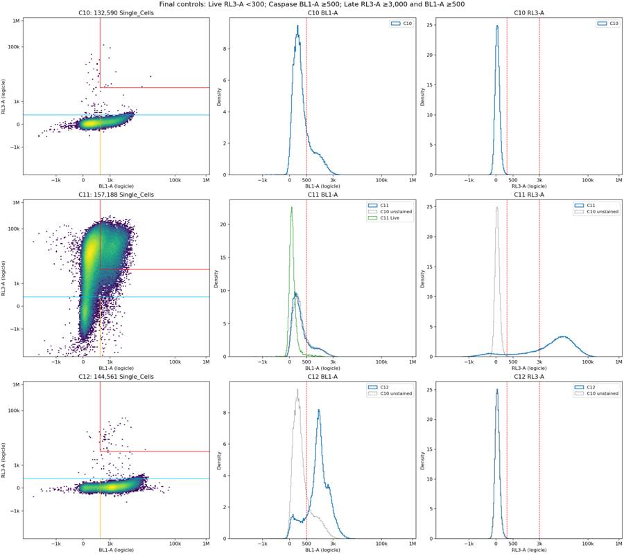
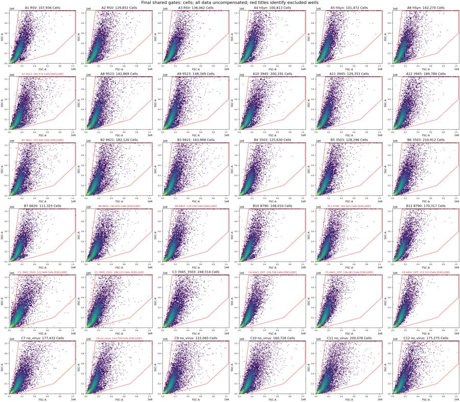
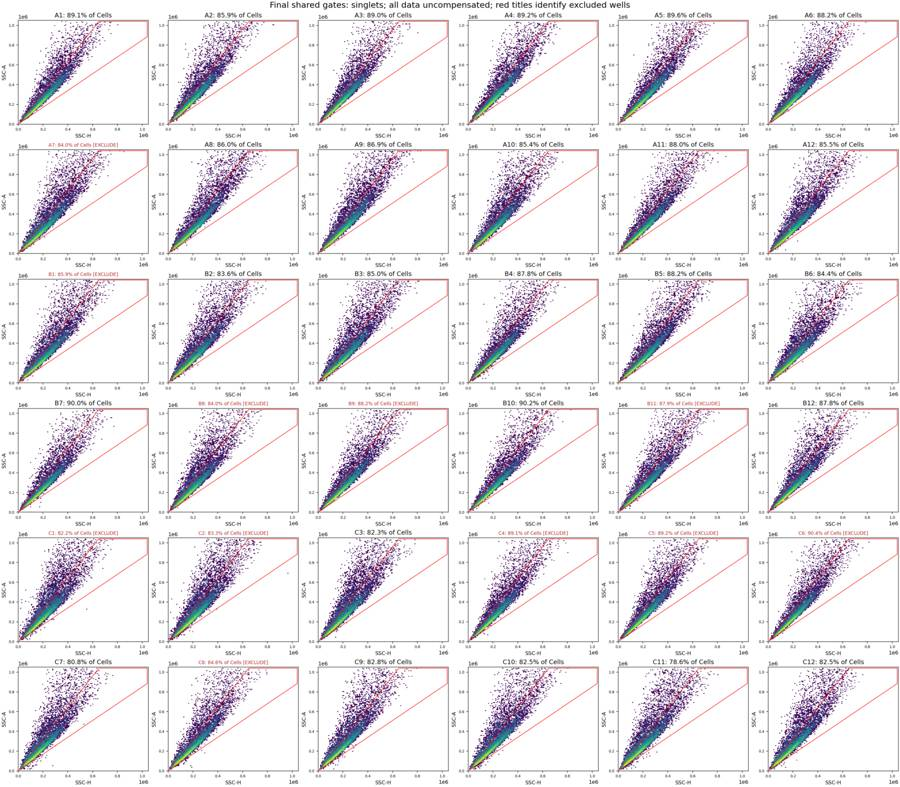
tool call · exec
const r=await Promise.allSettled([
tools.exec_command({cmd:"python /task/outputs/time_qc.py > /task/outputs/time_qc_run.log","yield_time_ms":1000,"max_output_tokens":1000}),
tools.exec_command({cmd:"python - <<'PY'\nimport numpy as np,flowkit as fk\nimport matplotlib\nmatplotlib.use('Agg')\nimport matplotlib.pyplot as plt\nfrom pathlib import Path\nfig,axs=plt.subplots(2,2,figsize=(15,10),constrained_layout=True)\nfor row,w in enumerate(['A7','B8']):\n s=fk.Sample(f'/task/inputs/raw/Caspase_KO_RNAswap-rep2_caspase_Group_{w}.fcs');e=s.get_events(source='raw');t=e[:,0];j=np.flatnonzero(np.diff(t)<0)[0]+1\n for col,n in enumerate([min(j+6000,len(t)),min(70000,len(t))]):\n ax=axs[row,col];ax.plot(np.arange(n)+1,t[:n],lw=1);ax.axvline(j+1,color='red',ls='--');ax.set(xlabel='Recorded event index (1-based)',ylabel='Time (s)',title=f'{w}: Time {t[j-1]:.3f} → {t[j]:.3f} s at event {j+1:,}');ax.text(.05,.9,f'{j:,} preceding events ({100*j/len(t):.2f}%)',transform=ax.transAxes)\nfig.suptitle('Unexpected clock resets: acquisition order preserved; no events removed',fontsize=14)\nfig.savefig('/task/outputs/plots/final_clock_resets.png',dpi=160)\nPY","yield_time_ms":1000,"max_output_tokens":1000})
]);r.forEach(text);
for(const path of ["/task/outputs/plots/final_fluorescence_all.png","/task/outputs/plots/final_acquisition_qc.png"]) image((await tools.view_image({path})).image_url);
tool output
Script completed Wall time 1.3 seconds Output:
{"status":"fulfilled","value":{"chunk_id":"34ea69","wall_time_seconds":1.00032069,"session_id":69726,"original_token_count":0,"output":""}}{"status":"fulfilled","value":{"chunk_id":"aa8c20","wall_time_seconds":1.00044292,"session_id":73698,"original_token_count":0,"output":""}}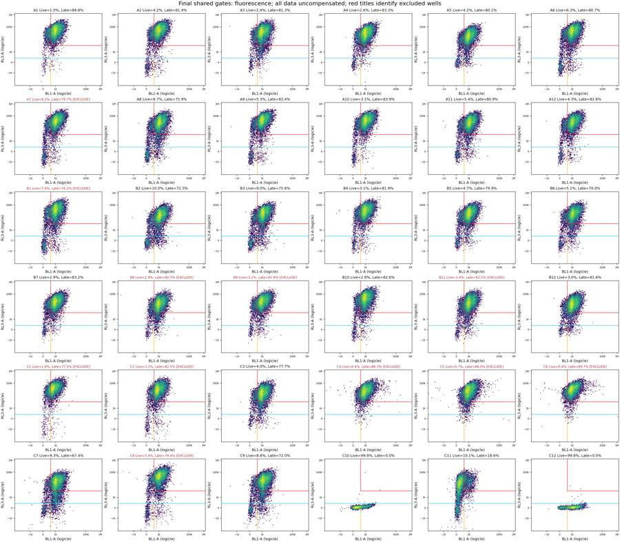
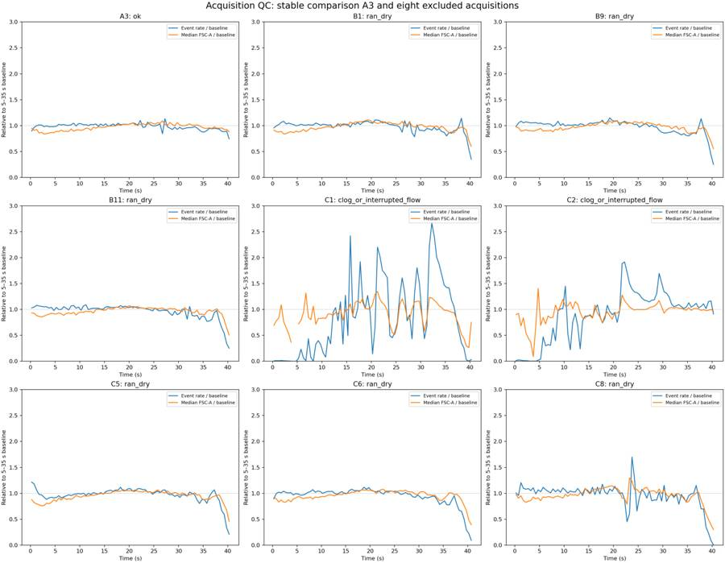
37
agent
All 180 counts match the saved, reloaded XML, and every child population is contained within its full parent chain. The final QC table flags 11 wells. The notes and plots document the exclusions and the background overlap that limits interpretation of the caspase gates.
tool call · exec
const results=await Promise.allSettled([
tools.write_stdin({session_id:69726,chars:"","yield_time_ms":1000,"max_output_tokens":1000}),
tools.write_stdin({session_id:73698,chars:"","yield_time_ms":1000,"max_output_tokens":1000}),
tools.exec_command({cmd:"python - <<'PY'\nfrom pathlib import Path\nimport json,hashlib,pandas as pd\nout=Path('/task/outputs');p=out/'validation.json';v=json.loads(p.read_text());v['deliverable_sha256']={name:hashlib.sha256((out/name).read_bytes()).hexdigest() for name in ['gates.xml','counts.csv','flags.csv','notes.md']};p.write_text(json.dumps(v,indent=2)+'\\n')\nfor old,new in [('control_quantiles.csv','initial_control_quantiles.csv'),('threshold_sensitivity.csv','initial_threshold_sensitivity.csv')]:\n if (out/old).exists():(out/old).rename(out/new)\nfor script,old,new in [('inspect_controls.py',\"'control_quantiles.csv'\",\"'initial_control_quantiles.csv'\"),('refine_gates.py',\"'threshold_sensitivity.csv'\",\"'initial_threshold_sensitivity.csv'\")]:\n p=out/script;p.write_text(p.read_text().replace(old,new))\nprint('Required deliverables:')\nfor name in ['gates.xml','counts.csv','flags.csv','notes.md']:print(name,(out/name).stat().st_size,'bytes')\nprint('counts',pd.read_csv(out/'counts.csv').shape,'flags',pd.read_csv(out/'flags.csv').shape)\nprint('Excluded',', '.join(pd.read_csv(out/'flags.csv').query('usable==\"no\"').well))\nprint('Validation',v['validation'])\nPY","max_output_tokens":1000})
]);results.forEach(text);
image((await tools.view_image({path:"/task/outputs/plots/final_clock_resets.png"})).image_url);
tool output
Script completed Wall time 0.3 seconds Output:
{"status":"fulfilled","value":{"chunk_id":"501a48","wall_time_seconds":0.00000267,"exit_code":0,"original_token_count":0,"output":""}}{"status":"fulfilled","value":{"chunk_id":"438102","wall_time_seconds":0.00000266,"exit_code":0,"original_token_count":0,"output":""}}{"status":"fulfilled","value":{"chunk_id":"ef3e4e","wall_time_seconds":0.10844524,"exit_code":0,"original_token_count":52,"output":"Required deliverables:\ngates.xml 5203 bytes\ncounts.csv 16705 bytes\nflags.csv 11048 bytes\nnotes.md 2896 bytes\ncounts (180, 6) flags (36, 5)\nExcluded A7, B1, B8, B9, B11, C1, C2, C4, C5, C6, C8\nValidation PASS\n"}}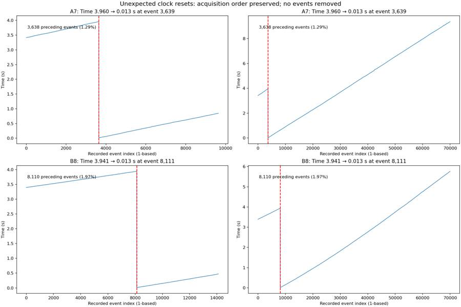
38
agent
Completed and validated one shared gate set across all 36 wells.
- [gates.xml](/task/outputs/gates.xml) — reloads successfully.
- [counts.csv](/task/outputs/counts.csv) — 180 rows matching the saved gates.
- [flags.csv](/task/outputs/flags.csv) — 36 rows with quantified evidence.
- [notes.md](/task/outputs/notes.md) — gate placement and interpretation limits.
**11 wells flagged:** A7, B1, B8, B9, B11, C1, C2, C4–C6 and C8. Notes document GFP confounding and substantial control-background overlap.